<!doctype html>
<html lang="en">
<head>
  <meta charset="utf-8">
  <meta name="viewport" content="width=device-width, initial-scale=1">
  <title>arxiv digest — 2026-06-18</title>
  <style>
:root {
  --bg: #ffffff;
  --fg: #1f2328;
  --muted: #59636e;
  --border: #d0d7de;
  --card: #f6f8fa;
  --link: #0969da;
}
body {
  max-width: 980px;
  margin: 0 auto;
  padding: 2rem 1rem 5rem;
  font-family: -apple-system, BlinkMacSystemFont, "Segoe UI", Helvetica, Arial, sans-serif;
  line-height: 1.55;
  color: var(--fg);
  background: var(--bg);
}
a { color: var(--link); }
img { max-width: 100%; height: auto; }
pre, code { background: var(--card); border-radius: 6px; }
pre { padding: 1rem; overflow-x: auto; }
blockquote { border-left: 4px solid var(--border); padding-left: 1rem; color: var(--muted); }
details { margin: 0.6rem 0; }
summary { cursor: pointer; font-weight: 600; }
.paper-figures-scroll {
  display: flex;
  gap: 1rem;
  overflow-x: auto;
  overscroll-behavior-x: contain;
  padding: 0.75rem 0.25rem 1rem;
  margin: 1rem 0 1.25rem;
  border-top: 1px solid var(--border);
  border-bottom: 1px solid var(--border);
  scroll-snap-type: x proximity;
}
.paper-figure-card {
  flex: 0 0 min(260px, 72vw);
  scroll-snap-align: start;
  background: var(--card);
  border: 1px solid var(--border);
  border-radius: 12px;
  padding: 0.55rem;
}
.paper-figure-card img {
  display: block;
  width: 100%;
  max-height: 240px;
  object-fit: contain;
  background: white;
  border-radius: 8px;
}
.paper-figure-caption {
  display: block;
  margin-top: 0.5rem;
  color: var(--muted);
  font-size: 0.85rem;
}
.figure-strip-hint {
  color: var(--muted);
  font-size: 0.9rem;
  margin-bottom: -0.3rem;
}
</style>
  <!-- MathJax: renders $...$ inline math and $$...$$ display math, plus
       \(...\) and \[...\]. Loaded from the official CDN; works offline
       once cached. Configured to skip code/pre blocks so arxiv IDs that
       look like dollar amounts don't get mangled. -->
  <script>
    window.MathJax = {
      tex: {
        inlineMath: [['$', '$'], ['\\(', '\\)']],
        displayMath: [['$$', '$$'], ['\\[', '\\]']],
        processEscapes: true,
        processEnvironments: true
      },
      options: {
        skipHtmlTags: ['script', 'noscript', 'style', 'textarea', 'pre', 'code'],
        ignoreHtmlClass: 'tex2jax_ignore',
        processHtmlClass: 'tex2jax_process'
      }
    };
  </script>
  <script id="MathJax-script" async
    src="https://cdn.jsdelivr.net/npm/mathjax@3/es5/tex-chtml.js"></script>
</head>
<body>
<header style="background-color: #333; color: white; padding: 15px; margin-bottom: 20px;">
  <h1 style="margin: 0; font-size: 24px;">
    <a href="https://ochelpan.github.io/arXiv_clean/" style="color: white; text-decoration: none;">Main</a>
  </h1>
</header>

<h1>Daily arXiv Report</h1>

<hr>
<p>
<a href="index.html">← Index</a>
 · <a href="papers_01.html">← Previous</a> · <a href="papers_03.html">Next →</a>
</p>
<hr>

<h2>Papers 21–40</h2>
<p><a id="paper-2606.18408"></a></p>
<h3 id="characterization-of-nested-walsh-parity-check-filters-in-a-single-photon-eight-mode-register-on-a-cloud-photonic-processor"><a href="http://arxiv.org/abs/2606.18408v1">Characterization of nested Walsh parity-check filters in a single-photon eight-mode register on a cloud photonic processor</a></h3>
<p><strong>Authors:</strong> Emma Tully, Jonathan Washburn, Megan Simons<br>
<strong>Type:</strong> experiment · <strong>Category:</strong> quantum information and computing · <strong>PDF:</strong> <a href="https://arxiv.org/pdf/2606.18408v1">https://arxiv.org/pdf/2606.18408v1</a><br>
<strong>Analysis basis:</strong> full PDF text, analyzed in chunks
<strong>Topic relevance:</strong> 🔥 <code>QC/QI experiment</code> <strong>4/5</strong> · <code>quantum optics experiment</code> <strong>3/5</strong> · <code>quantum measurements</code> <strong>2/5</strong> · <code>analog quantum simulation</code> <strong>1/5</strong> · <code>entanglement &amp; information structure</code> <strong>1/5</strong> · <code>interference shaping light</code> <strong>1/5</strong> · <code>non-equilibrium dynamics</code> <strong>1/5</strong></p>
<div class="figure-strip-hint">↔ Scroll figures horizontally</div>
<div class="paper-figures-scroll">
<figure class="paper-figure-card">
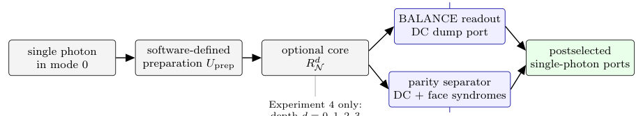
<figcaption class="paper-figure-caption"><b>Fig 1.</b> FIG. 2. Experimental workflow for the single-photon hardware tests. A software-defined preparation unitary maps the injected single photon to a target neutral or parity-checked input state. Depending on the experiment, the prepared state is sent directly to a separator or first through d applications of the neutral-sector unitary core RN . BALANCE readout measures the DC leakage channel, while the parity separator routes the DC/sum and face-parity syndrome channels to output ports. All reported probabilities are normalized to postselected single-photon detections across the eight logical ports.</figcaption>
</figure>
<figure class="paper-figure-card">
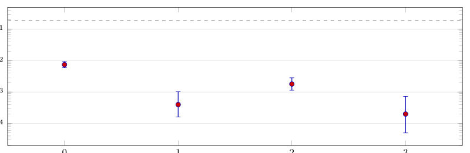
<figcaption class="paper-figure-caption"><b>Fig 2.</b> FIG. 3. Dump probability at the tested neutral-sector core depths on a logarithmic scale (Experiment 4). These are four operating-depth points (0, 1, 2, 3 applications) with a non-monotonic ordering, not a depth scan: no curve is fit through them and the figure should not be read as a depth-scaling trend (a dedicated ∼10–20 cycle scan, deferred to future work, would be required to extract a per-cycle leakage rate). Markers are the hardware values; vertical bars are 95% Wilson confidence intervals. The dashed line is the non-neutral control level (ˆp = 0.190, the 1× control; the no-core-cycle control agrees at 0.196, statistically indistinguishable from it, so the core does not by itself...</figcaption>
</figure>
</div>

<p><strong>Summary.</strong> The research characterizes the implementation of nested Walsh parity-check filters on an eight-mode photonic processor to encode and protect single-photon states. By measuring leakage suppression and syndrome routing fidelity across hundreds of thousands of shots, the authors validate the feasibility of using such hardware for quantum error correction primitives. This work advances the understanding of physical limitations in scaling fault-tolerant quantum computation.</p>
<p><strong>Why it may be interesting.</strong> This work provides a crucial, highly detailed experimental benchmark for implementing abstract quantum error-correcting principles using near-term linear optical hardware, directly addressing resource limitations in physical realization.</p>
<details>
<summary>Detailed structure</summary>
<p><strong>Main problem.</strong> The paper characterizes the faithful implementation of nested Walsh parity-check filters on a photonic processor to encode and protect quantum states in a single-photon eight-mode register.</p>
<p><strong>Main result.</strong> They successfully demonstrated high fidelity for subspace projection, achieving significant suppression factors ($\approx 21	imes$) for residual leakage compared to ideal baselines, while confirming the structure of syndrome routing channels.</p>
<p><strong>Method.</strong> The methodology involves performing single-photon measurements on a cloud photonic processor, testing the physical realization of abstract quantum error-correcting codes (like the extended Hamming code) via path/mode encodings.</p>
<p><strong>Model / system.</strong> The system uses a single-photon eight-mode spatial register indexed by the vertices of a 3-cube ($Q_3$) on Quandela's Belenos processor. The encoding realizes subspaces corresponding to classical codes, such as the zero-sum neutral subspace and the $[8,4,4]$ extended Hamming code.</p>
<p><strong>Key observables.</strong> Residual DC-port leakage (mean $0.6\%$), selectivity of face-parity syndrome channels ($94$-$99\%$), and Hong-Ou-Mandel visibility degradation/recovery.</p>
<p><strong>Important parameters / regimes.</strong> Number of detections ($>340,000$); suppression factors ($\approx 21	imes$); fixed-pattern separator bias ($\pm 0.02$).</p>
<p><strong>Assumptions / limitations.</strong> The measurements are conditional on postselected single-photon detections and do not demonstrate full error correction or protection against photon loss.</p>
<p><strong>Figures summary.</strong> Figures illustrate the $Q_3$ vertex layout, the Gray-code Hamiltonian cycle ordering modes for the core, and show leakage/dump probabilities as a function of applied unitary depth or error injection strength.</p>
<p><strong>Paper structure.</strong> The paper progresses by first defining the theoretical encoding (nested filters realizing specific codes), then detailing the experimental setup on the photonic chip, followed by quantitative measurements of leakage suppression, syndrome routing fidelity, and diagnostic tests like HOM visibility degradation.</p>
</details>
<details>
<summary>Abstract</summary>
<p>We characterize two nested Walsh parity-check filters implemented on Quandela's Belenos cloud photonic processor in a single-photon eight-mode spatial register. The modes are indexed by the vertices of the cube $Q_3$. The filters realize the classical $[8,7,2]$ single-parity-check code, the zero-sum neutral subspace $\mathcal{N}$ and the $[8,4,4]$ extended Hamming code, the parity-checked subspace $\mathcal{S}\subset\mathcal{N}$ with one DC and three face-parity syndrome channels. These are first-quantized path/mode encodings of classical codes: the experiment verifies leakage suppression and syndrome routing, not error correction or protection against photon loss, and all probabilities are conditional on postselected single-photon detections. Across more than 340,000 detections, neutral inputs show residual DC-port leakage of $0.02\%$-$1.1\%$ (mean $0.6\%$), corresponding to $\approx21\times$ suppression relative to the ideal $0.125$ DC-capture baseline and $31.6\times$ relative to the measured non-neutral control. Injected DC contamination gives a monotonic soft error signal, and the three face-parity syndrome channels route to their predicted ports with $94$-$99\%$ selectivity. A sector-preserving unitary core keeps leakage far below non-neutral controls over one to three applications, with differences dominated by calibration and compilation systematics rather than gate-cycle physics. We quantify these limits, including fixed-pattern separator bias, $\pm 0.02$ calibration offsets, and compilation scatter near the $10^{-3}$ leakage level, and report a Hong-Ou-Mandel degradation episode in which suppression vanished and recovered after recalibration.</p>
</details>
<p><sub><a href="#top">↑ back to top</a></sub></p>

<p><a id="paper-2606.19083"></a></p>
<h3 id="matrix-product-operators-in-the-age-of-block-encoding"><a href="http://arxiv.org/abs/2606.19083v1">Matrix Product Operators In The Age of Block Encoding</a></h3>
<p><strong>Authors:</strong> Eugene Dumitrescu<br>
<strong>Type:</strong> theory · <strong>Category:</strong> quantum information and computing · <strong>PDF:</strong> <a href="https://arxiv.org/pdf/2606.19083v1">https://arxiv.org/pdf/2606.19083v1</a><br>
<strong>Analysis basis:</strong> full PDF text, analyzed in chunks
<strong>Topic relevance:</strong> 🔥 <code>analog quantum simulation</code> <strong>4/5</strong> · 🔥 <code>methods for driven-dissipative</code> <strong>4/5</strong> · <code>non-equilibrium dynamics</code> <strong>2/5</strong> · <code>driven-dissipative phase transition</code> <strong>1/5</strong> · <code>entanglement &amp; information structure</code> <strong>1/5</strong> · <code>exotic spin models in light-matter</code> <strong>1/5</strong></p>
<div class="figure-strip-hint">↔ Scroll figures horizontally</div>
<div class="paper-figures-scroll">
<figure class="paper-figure-card">
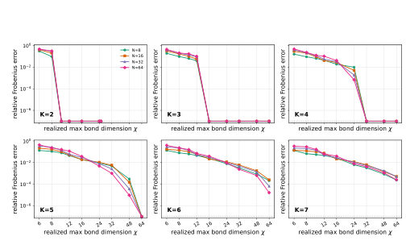
<figcaption class="paper-figure-caption"><b>Fig 1.</b> Figure 1. MPO bond dimension scaling for the representation of Hamiltonian powers. The bond dimension exhibits modest growth in 𝜒, significantly below the uncompressed 5𝐾scaling, and is importantly independent of system size.</figcaption>
</figure>
<figure class="paper-figure-card">
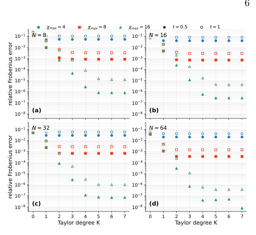
<figcaption class="paper-figure-caption"><b>Fig 2.</b> Figure 2. Relative Frobenius error in synthesizing Hamil- tonian simulation unitaries as an MPO Taylor expansion, ||𝑒−𝑖𝐻𝑡−∑︀𝐾 𝑘=0 (−𝑖𝐻𝑡)k</figcaption>
</figure>
<figure class="paper-figure-card">
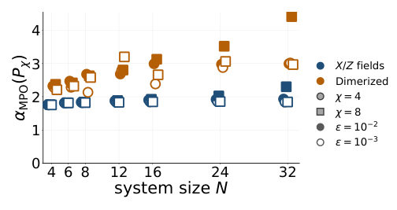
<figcaption class="paper-figure-caption"><b>Fig 3.</b> Figure 3. MPO block encoding normalization 𝛼MPO. The blue (orange) markers represent the model with additional fields (dimerization) for 𝑡= 0.5. Results for 𝜖= 10−2 (10−3) are indicated by the filled in (open) markers. Circles and squares denote 𝜒= 4 and 𝜒= 8 respectively.</figcaption>
</figure>
</div>

<p><strong>Summary.</strong> This work introduces a block-encoding compiler that treats Matrix Product Operators (MPOs) as natural intermediate representations for quantum circuits. It significantly accelerates Hamiltonian simulation by compiling the time evolution operator directly within the MPO structure, avoiding exponential resource scaling associated with explicit Pauli expansions.</p>
<p><strong>Why it may be interesting.</strong> For AMO physicists studying open quantum systems or dynamics, the ability to efficiently simulate complex Hamiltonians like Heisenberg models using tensor network formalisms is crucial for accessing regimes where standard methods fail due to exponential overheads.</p>
<details>
<summary>Detailed structure</summary>
<p><strong>Main problem.</strong> The paper addresses the challenge of efficiently compiling quantum circuits for simulating time evolution generated by Hamiltonians expressed as Matrix Product Operators (MPOs). It aims to improve upon standard methods that suffer from exponential resource scaling.</p>
<p><strong>Main result.</strong> A novel MPO block-encoding compiler achieves polynomial speedups by treating MPOs as structured intermediate representations, thereby avoiding the prohibitive $\mathcal{O}(NK)$ Pauli-string growth seen in explicit expansions.</p>
<p><strong>Method.</strong> The core method involves developing a block-encoding compiler that maps MPOs to conditional PREP and SELECT stages within a Linear Circuit Unit (LCU) framework. This allows for compiling polynomial transformations directly at the MPO level.</p>
<p><strong>Model / system.</strong> The focus is on real-time quantum Hamiltonian simulation, exemplified by the Heisenberg model and its perturbed variants. The underlying mathematical structure is the representation of time evolution unitaries ($e^{-itH}$) using tensor networks (MPOs).</p>
<p><strong>Key observables.</strong> Computational cost scaling, MPO bond dimension ($\chi$), Pauli-string growth rate, and the normalization overhead factor ($\alpha$).</p>
<p><strong>Important parameters / regimes.</strong> Bond dimension ($\chi$), truncation error, system size ($N$), and Taylor expansion order ($K$).</p>
<p><strong>Assumptions / limitations.</strong> The analysis assumes that classical pre-processing using tensor network data structures can accelerate quantum algorithms. It compares different compilation routes (Pauli vs. MPO-transition).</p>
<p><strong>Figures summary.</strong> Figures illustrate the scaling of MPO bond dimension ($\chi$) independent of system size for Hamiltonian powers, and compare relative Frobenius errors when synthesizing unitaries via MPO Taylor expansions.</p>
<p><strong>Paper structure.</strong> The paper develops a block-encoding compiler by first mapping MPOs to LCU structures. It then compares this MPO-transition route against explicit Pauli expansion routes, demonstrating polynomial speedups in resource scaling for simulating time evolution.</p>
</details>
<details>
<summary>Abstract</summary>
<p>We develop a block-encoding compiler that speeds up linear combination of unitaries Hamiltonian simulation programs by treating matrix product operators as compressed, virtual-path LCU programs. In showing how these new conditional PREP and SELECT stages are compiled in terms of a parent matrix product operator, we go beyond typical operator splitting product formulas and illustrate how tensor networks are a natural language and valid intermediate representation for quantum circuits. Our results are numerically verified for two important cases, namely, Heisenberg and perturbed Heisenberg-adjacent chain real-time evolution, and highlight polynomial speedups. Specifically, we highlight a polynomial speedup that avoids the $\mathcal{O}(N^K)$ Pauli-string growth when the compressed MPO bond dimension and path normalization remain mild. We quantify how MPO truncation error and bond-dimension budgets affect the compiled polynomial representation. Our algorithms show how classical pre-processing in terms of tensor network data structures opens new avenues to accelerate quantum algorithms.</p>
</details>
<p><sub><a href="#top">↑ back to top</a></sub></p>

<p><a id="paper-2606.19272"></a></p>
<h3 id="random-matrix-reduction-in-projective-quantum-mechanics"><a href="http://arxiv.org/abs/2606.19272v1">Random-matrix reduction in projective quantum mechanics</a></h3>
<p><strong>Authors:</strong> Alexey A. Kryukov<br>
<strong>Type:</strong> theory · <strong>Category:</strong> other · <strong>PDF:</strong> <a href="https://arxiv.org/pdf/2606.19272v1">https://arxiv.org/pdf/2606.19272v1</a><br>
<strong>Analysis basis:</strong> full PDF text, analyzed in chunks
<strong>Topic relevance:</strong> 🔥 <code>quantum measurements</code> <strong>4/5</strong> · <code>measurement-induced transitions</code> <strong>3/5</strong> · <code>correlated / nonlocal dissipation</code> <strong>1/5</strong> · <code>driven-dissipative phase transition</code> <strong>1/5</strong> · <code>methods for driven-dissipative</code> <strong>1/5</strong> · <code>non-equilibrium dynamics</code> <strong>1/5</strong></p>
<div class="figure-strip-hint">↔ Scroll figures horizontally</div>
<div class="paper-figures-scroll">
<figure class="paper-figure-card">
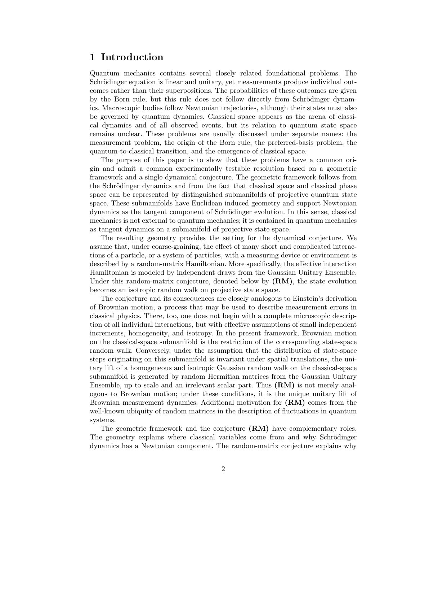
<figcaption class="paper-figure-caption"><b>Fig 1.</b> Low-resolution page preview, page 2</figcaption>
</figure>
<figure class="paper-figure-card">
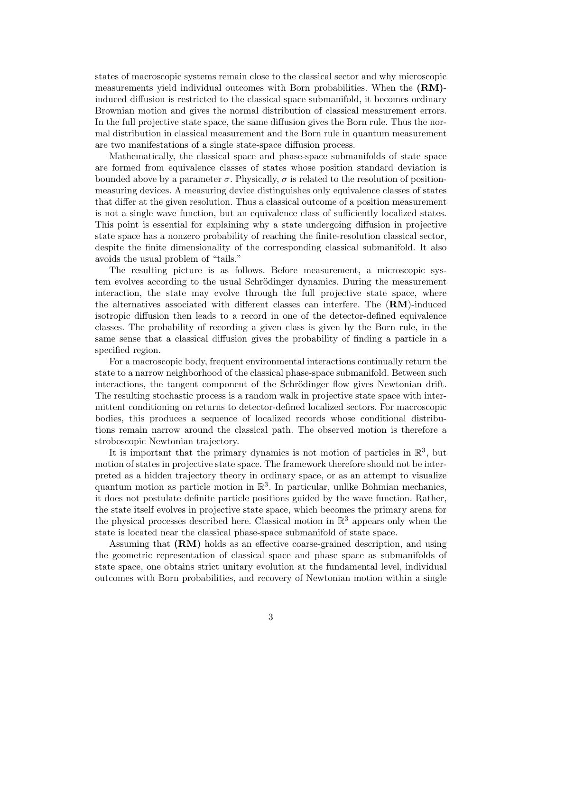
<figcaption class="paper-figure-caption"><b>Fig 2.</b> Low-resolution page preview, page 3</figcaption>
</figure>
<figure class="paper-figure-card">
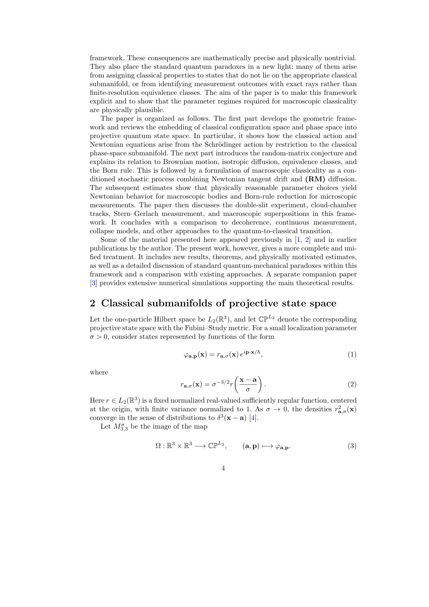
<figcaption class="paper-figure-caption"><b>Fig 3.</b> Low-resolution page preview, page 4</figcaption>
</figure>
<figure class="paper-figure-card">
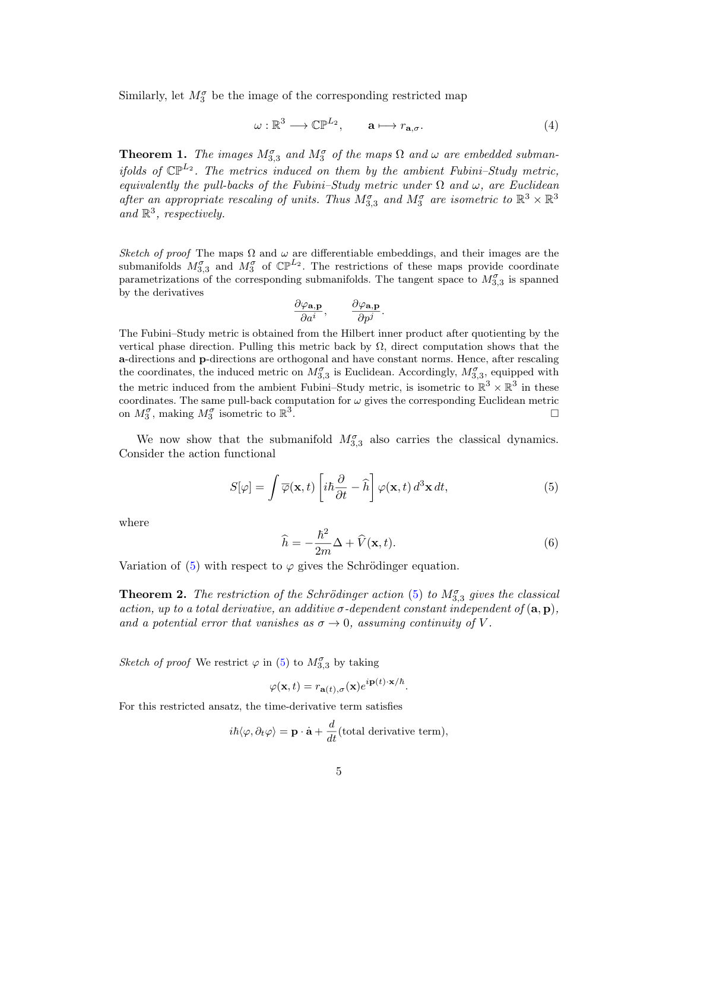
<figcaption class="paper-figure-caption"><b>Fig 4.</b> Low-resolution page preview, page 5</figcaption>
</figure>
<figure class="paper-figure-card">
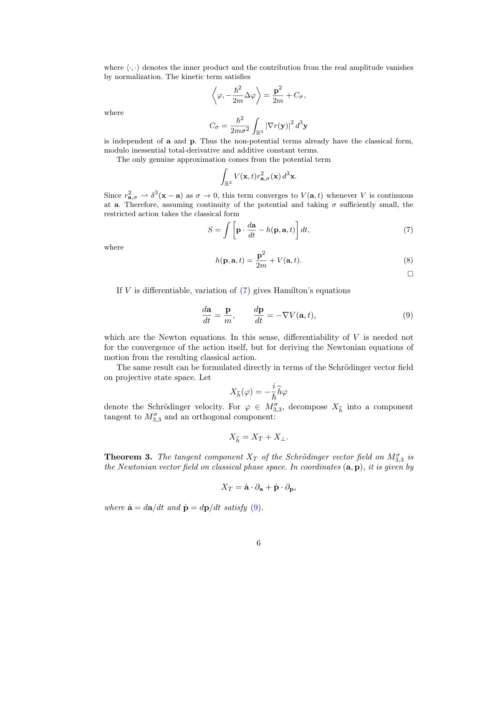
<figcaption class="paper-figure-caption"><b>Fig 5.</b> Low-resolution page preview, page 6</figcaption>
</figure>
</div>

<p><strong>Summary.</strong> The paper proposes that quantum mechanics can be understood by viewing classical reality as specific, localized submanifolds embedded within the full projective quantum state space. Measurement and environmental interaction are modeled unitarily via random-matrix dynamics (GUE), which forces stochastic diffusion leading to Born probabilities and stabilizing macroscopic systems into predictable Newtonian trajectories.</p>
<p><strong>Why it may be interesting.</strong> This work provides a highly abstract yet potentially unifying geometric mechanism for solving foundational problems in QM, linking stochastic processes (Brownian motion/GUE) directly to the emergence of classical determinism within a strictly unitary framework.</p>
<details>
<summary>Detailed structure</summary>
<p><strong>Main problem.</strong> To develop a unified, geometrically consistent framework that resolves foundational quantum mechanics problems like measurement, the origin of the Born rule, and the quantum-to-classical transition.</p>
<p><strong>Main result.</strong> The framework successfully embeds classical dynamics (Newtonian motion) as distinguished submanifolds within the projective quantum state space, while environmental interactions are modeled by random-matrix dynamics yielding isotropic diffusion.</p>
<p><strong>Method.</strong> It employs a geometric approach, identifying classical spaces with low-resolution equivalence classes on the projective state manifold. Measurement and environment coupling are modeled using Random Matrix Theory (GUE) to enforce unitary stochastic evolution.</p>
<p><strong>Model / system.</strong> The system is quantum mechanics evolving in the projective Hilbert space ($ ext{CPL}^2$). Classical dynamics emerge when the state is restricted to localized submanifolds ($M_\sigma^3$) whose geometry is Euclidean, yielding Newtonian equations via the tangent component of the Schrödinger flow.</p>
<p><strong>Key observables.</strong> Born-rule transition probabilities (microscopic); Stroboscopic Newtonian trajectories (macroscopic); Equivalence classes defining measurement outcomes.</p>
<p><strong>Important parameters / regimes.</strong> Localization parameter $\sigma$ (related to measurement resolution); Planck's constant ($\hbar$); Random Matrix Ensemble (GUE).</p>
<p><strong>Assumptions / limitations.</strong> The central assumption is the Random-Matrix Conjecture, positing that environmental interactions are unitarily equivalent to random matrices drawn from the GUE. It also assumes classicality arises from finite-resolution coarse-graining.</p>
<p><strong>Figures summary.</strong> Not specified in notes; figures likely illustrate the geometric embedding of classical manifolds within the projective state space and the stochastic nature of measurement paths.</p>
<p><strong>Paper structure.</strong> The paper builds by first establishing the geometric embedding of classical phase/configuration spaces as submanifolds. It then introduces the Random-Matrix Conjecture to model environmental coupling, showing this leads to isotropic diffusion (Born rule). Finally, it synthesizes these elements to provide a unitary account of measurement and the quantum-to-classical transition.</p>
</details>
<details>
<summary>Abstract</summary>
<p>We develop a state-space geometric framework for measurement, classicality, and quantum paradoxes, based on one dynamical conjecture. Classical configuration space and classical phase space for a mechanical system arise as distinguished submanifolds of projective quantum state space. On these submanifolds, the Fubini--Study geometry induces Euclidean classical geometry, and the tangent component of Schrödinger evolution reproduces Newtonian dynamics. Within this framework, interactions with measuring devices and environments are described by random-matrix dynamics on projective state space, generated by matrices drawn from the Gaussian Unitary Ensemble. We show that this random-matrix dynamics yields isotropic diffusion, giving Born-rule transition probabilities in microscopic measurements and stabilizing classical behavior in macroscopic systems. We further argue that the random-matrix conjecture is not an independent ad hoc assumption: under natural translation-invariance assumptions on the distribution of state-space steps originating on the classical submanifold, the unitary lift of homogeneous and isotropic Brownian motion on that submanifold is uniquely given by the Gaussian Unitary Ensemble, up to scale and an irrelevant scalar part. The resulting framework provides a unitary account of measurement and the quantum-to-classical transition and, if accepted, offers a dynamical resolution of standard quantum paradoxes.</p>
</details>
<p><sub><a href="#top">↑ back to top</a></sub></p>

<p><a id="paper-2606.19016"></a></p>
<h3 id="coherent-microwave-control-of-optically-addressable-donor-qubits-in-zno"><a href="http://arxiv.org/abs/2606.19016v1">Coherent Microwave Control of Optically Addressable Donor Qubits in ZnO</a></h3>
<p><strong>Authors:</strong> Ethan R. Hansen, Dong-Rong Wu, Yixuan Li, Yaser Silani, Joseph Falson, Yusuke Kozuka, Masashi Kawasaki, Yuan Ping, Kai-Mei C Fu<br>
<strong>Type:</strong> experiment · <strong>Category:</strong> quantum information and computing · <strong>PDF:</strong> <a href="https://arxiv.org/pdf/2606.19016v1">https://arxiv.org/pdf/2606.19016v1</a><br>
<strong>Analysis basis:</strong> full PDF text, analyzed in chunks
<strong>Topic relevance:</strong> 🔥 <code>QC/QI experiment</code> <strong>4/5</strong> · <code>spintronics-quantum-optics interface</code> <strong>3/5</strong> · <code>exotic spin models in light-matter</code> <strong>1/5</strong> · <code>quantum measurements</code> <strong>1/5</strong> · <code>quantum optics experiment</code> <strong>1/5</strong></p>
<div class="figure-strip-hint">↔ Scroll figures horizontally</div>
<div class="paper-figures-scroll">
<figure class="paper-figure-card">
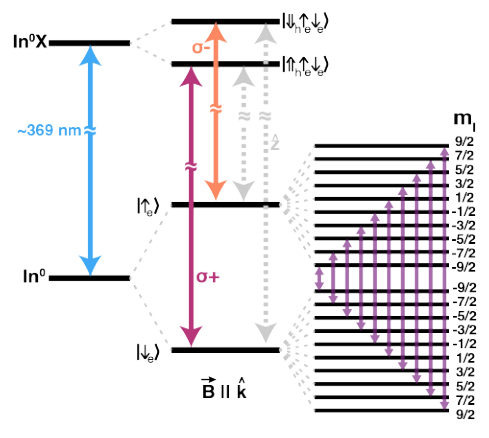
<figcaption class="paper-figure-caption"><b>Fig 1.</b> FIG. 1: Energy-level structure of a neutral indium donor in ZnO in Faraday geometry, ⃗B ∥ˆk ∥ˆc, in which ˆk is the optical axis and ˆc is the ZnO c-axis. The neutral donor ground state (In0) consists of two electron-spin states split by the Zeeman interaction. Optical excitation near 369 nm drives transitions to the donor-bound exciton state (In0X), whose two hole-spin states are also Zeeman split. The spin- selective optical transitions are labeled by their circular po- larization, σ+ and σ−. Hyperfine coupling to the 115In nu- clear spin (I = 9/2) further splits each electron-spin mani- fold into ten sublevels labeled by mI.</figcaption>
</figure>
<figure class="paper-figure-card">
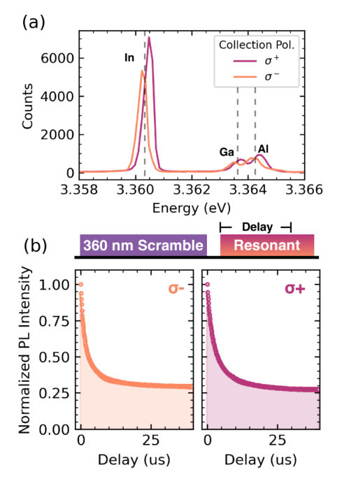
<figcaption class="paper-figure-caption"><b>Fig 2.</b> FIG. 2: (a) In0X photoluminescence from implanted In at B = 6 T collected in σ+ and σ−polarization. Also observed are Ga and Al transitions originating from the substrate. Dashed lines label the zero-field donor-bound-exciton tran- sitions for In, Ga, and Al donors. Spectra are instrument resolution limited. Excitation wavelength is 360 nm (b) Time-resolved optical pumping at B = 300 mT following a 360 nm scramble pulse and resonant excitation on the σ−(369.26781 nm) and σ+ (369.26457 nm) transitions. The scramble and resonant pump powers are each 150 nW and applied for a duration of 150 µs. Traces are background- subtracted and normalized. T = 5.5 K.</figcaption>
</figure>
<figure class="paper-figure-card">
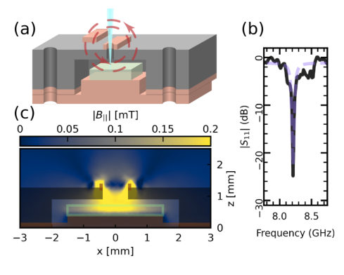
<figcaption class="paper-figure-caption"><b>Fig 3.</b> FIG. 3: Microwave resonator for coherent spin control. (a) Schematic of the microstrip resonator with the embed- ded ZnO sample. The blue beam indicates optical access through the central hole, and the red arrows indicate the microwave magnetic field. (b) Measured reflection spec- trum, |S11|, showing a resonance near 8.2 GHz. Dashed purple curve is the simulated |S11|. (c) Simulated in-plane microwave magnetic field, |B∥|, for an applied microwave power of 0.5 W. (CST Microwave Studio [24].)</figcaption>
</figure>
<figure class="paper-figure-card">
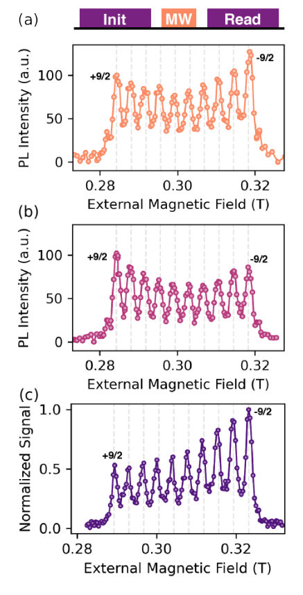
<figcaption class="paper-figure-caption"><b>Fig 4.</b> FIG. 4: (a,b) Pulsed ODMR spectra acquired by sweeping the external magnetic field at fixed microwave frequency (fMW = 8.20 GHz) with resonant optical pumping on the σ−and σ+ transitions, respectively. ΩR/2π = 23 MHz for panels (a) and (b). (c) Pulsed ODMR spectrum acquired with σ−pumping after tilting the sample by approximately 13◦relative to the configuration used in panels (a) and (b); ΩR/2π = 19 MHz and fMW = 8.33 GHz. Vertical dashed lines are split by 104 MHz and aligned with the 10 hyperfine transitions. T=5.5 K.</figcaption>
</figure>
<figure class="paper-figure-card">
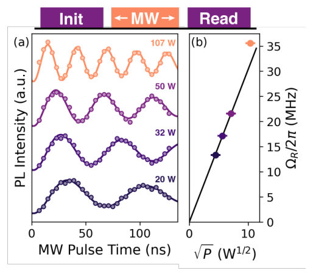
<figcaption class="paper-figure-caption"><b>Fig 5.</b> FIG. 5: (a) Pulsed Rabi measurements on the mI = −9/2 hyperfine transition for four applied microwave powers. Ac- quired with σ−optical pumping. The traces are vertically offset for clarity. Solid curves are a simultaneous fit to an en- semble Rabi model in which the coherent two-level response is averaged over a Gaussian distribution of static microwave detunings with fixed width σ∆/2π = 13 MHz, correspond- ing to T ∗ 2 ≃17 ns for a Gaussian Ramsey envelope. No additional homogeneous decay is included in these curves, i.e. T2 →∞. The fit uses a shared timing offset and in- dependent Rabi frequency, amplitude, and baseline for each microwave power. (b) Rabi frequencies fR = ΩR/2π ex-...</figcaption>
</figure>
</div>

<p><strong>Summary.</strong> The researchers successfully achieved coherent microwave manipulation of donor electron spins in ZnO, confirming its potential as a qubit platform. They characterized Rabi oscillations and measured coherence times using advanced pulse sequences. The key finding is that while microwave control works, the coherence time is limited by spectral diffusion from the local electronic spin bath, presenting an open challenge for future quantum device development.</p>
<p><strong>Why it may be interesting.</strong> This work provides a concrete experimental realization of solid-state spin qubits in a wide-bandgap semiconductor ($ ext{ZnO}$), directly addressing the feasibility of microwave control necessary for quantum gate operations.</p>
<details>
<summary>Detailed structure</summary>
<p><strong>Main problem.</strong> The primary goal was to demonstrate coherent microwave control of donor electron spins in ZnO, overcoming limitations inherent in purely optical manipulation techniques.</p>
<p><strong>Main result.</strong> Coherent Rabi oscillations were observed with a $\pi$-pulse time of $\sim 14$ ns, establishing microwave control. However, the measured spin coherence ($T_2$) was found to be significantly shorter than previously reported values.</p>
<p><strong>Method.</strong> The experiment utilized pulsed optically-detected magnetic resonance (PODMR) combined with microwave excitation within a microstrip resonator geometry embedded in ZnO.</p>
<p><strong>Model / system.</strong> The system consists of optically addressable shallow donors ($  ext{In}$ ions) implanted in a $ ext{ZnO}$ host lattice. The physics involves the coupling between the electron spin, the ${}^{115}	ext{In}$ nuclear spin ($I=9/2$), and external microwave fields.</p>
<p><strong>Key observables.</strong> Rabi frequency ($\Omega/2\pi \approx 36$ MHz), $\pi$-pulse time ($\sim 14$ ns), inhomogeneous dephasing time ($T_*^2 = 17$ ns), and Hahn echo coherence time ($T_2 \approx 200$ ns).</p>
<p><strong>Important parameters / regimes.</strong> Low temperature (1.7 K), high magnetic field regimes for characterization, and the hyperfine coupling constant associated with ${}^{115}	ext{In}$.</p>
<p><strong>Assumptions / limitations.</strong> The short coherence time is attributed to spectral diffusion from the local electronic spin environment, ruling out microwave heating or instantaneous diffusion as dominant causes.</p>
<p><strong>Figures summary.</strong> Figures detail PL/PLE confirming donor incorporation and linewidths; schematics show the resonator geometry; Rabi oscillations confirm coherent control; Ramsey/Hahn echo sequences quantify coherence decay times.</p>
<p><strong>Paper structure.</strong> The paper establishes the physical platform (ZnO donors), demonstrates initialization and hyperfine-resolved microwave control via PODMR, characterizes fundamental dynamics using Rabi oscillations, and finally measures coherence time ($T_2$) using advanced pulse sequences to diagnose decoherence mechanisms.</p>
</details>
<details>
<summary>Abstract</summary>
<p>Optically addressable shallow donors in ZnO combine efficient spin-selective optical transitions with the potential for long spin coherence in an isotopically purifiable host lattice, making them an attractive platform for spin-photon quantum technologies. A key missing capability, however, has been coherent control beyond the small-angle rotations accessible with ultrafast optical pulses. Here we demonstrate coherent microwave control of implanted $^{115}\mathrm{In}$ donors in ZnO. Resonant optical pumping initializes and reads out the donor electron spin. Pulsed optically-detected magnetic resonance resolves the ten hyperfine transitions associated with the coupled $^{115}\mathrm{In}$ nuclear spin (I = 9/2) and reveals optical-pumping-induced nuclear spin polarization. We observe coherent Rabi oscillations with a maximum Rabi frequency of $Ω/2π= 36.2 \pm 0.7$\;MHz, corresponding to a $π$-pulse time of 13.8$\pm$0.3\;ns, and characterize the spin coherence using Ramsey, Hahn echo and dynamical-decoupling measurements. Unexpectedly, the measured coherence is substantially shorter than reported in previous optical studies of donor spins in ZnO at high magnetic field. Control experiments rule out several simple explanations including microwave heating and instantaneous diffusion from the driven donor ensemble, leaving an open question regarding the origin of decoherence at low magnetic field in microwave-controlled ZnO donors. These results establish microwave control of ZnO donor qubits with resonant optical access to specific donor species. More broadly, they demonstrate that coherent microwave control can be achieved in optically addressable spin systems with nanosecond-scale inhomogeneous dephasing, enabling field-, temperature-, and materials-dependent studies of coherence-limiting mechanisms and the development of optically interfaced electron-nuclear spin registers.</p>
</details>
<p><sub><a href="#top">↑ back to top</a></sub></p>

<p><a id="paper-2606.18711"></a></p>
<h3 id="integration-of-diamond-nanobeams-with-snvs-on-al2o3-waveguides-for-scalable-quantum-photonic-chip-application"><a href="http://arxiv.org/abs/2606.18711v1">Integration of diamond nanobeams with SnVs on Al2O3 waveguides for scalable quantum photonic chip application</a></h3>
<p><strong>Authors:</strong> Yeting Yang, Ryota Kitagawa, Tetsuya Miyatake, Masaharu Hida, Naoki Fushimi, Koki Kaminaka, Takuto Yamaguchi, Toshiki Iwai, Itsuki Takagi, Hidetsugu Matsukiyo, Satomi Ishida, Satoshi Iwamoto, Manabu Ohtomo, Toshiyuki Miyazawa, Kenichi Kawaguchi, Ryoichi Ishihara, Shintaro Sato<br>
<strong>Type:</strong> experiment · <strong>Category:</strong> quantum information and computing · <strong>PDF:</strong> <a href="https://arxiv.org/pdf/2606.18711v1">https://arxiv.org/pdf/2606.18711v1</a><br>
<strong>Analysis basis:</strong> full PDF text, analyzed in chunks
<strong>Topic relevance:</strong> 🔥 <code>QC/QI experiment</code> <strong>4/5</strong> · <code>quantum optics experiment</code> <strong>3/5</strong> · <code>analog quantum simulation</code> <strong>1/5</strong> · <code>interference shaping light</code> <strong>1/5</strong> · <code>spintronics-quantum-optics interface</code> <strong>1/5</strong></p>
<div class="figure-strip-hint">↔ Scroll figures horizontally</div>
<div class="paper-figures-scroll">
<figure class="paper-figure-card">
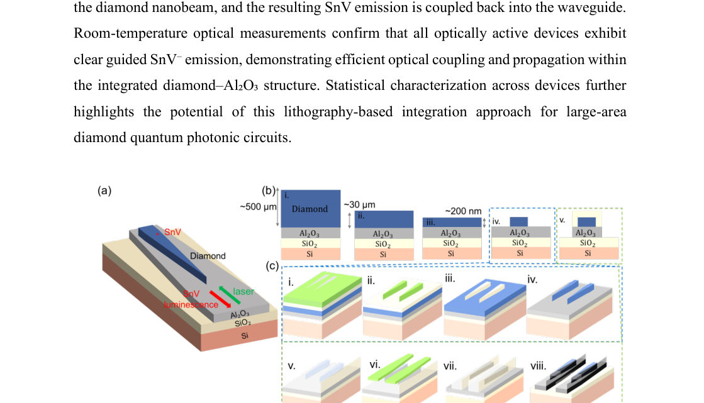
<figcaption class="paper-figure-caption"><b>Fig 1.</b> Fig. 1. Concept and fabrication flow of the diamond–Al₂O₃ photonic device. (a) Schematic of the dual-taper structure, in which a diamond nanobeam containing SnV</figcaption>
</figure>
<figure class="paper-figure-card">
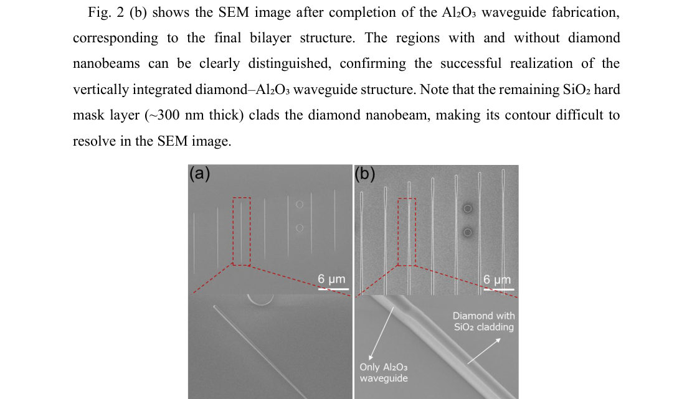
<figcaption class="paper-figure-caption"><b>Fig 2.</b> Fig. 2. Structural characterization of fabricated diamond-on-waveguide devices. (a) Tilted-view (20°) SEM image of the fabricated diamond nanobeams after the diamond etching step (Fig. 1 (c) (iv)), showing an array of seven nanobeams. The inset presents a magnified SEM image (rotated-45°) of a representative nanobeam. (b) SEM image of the completed diamond-on-waveguide device after the waveguide fabrication step (Fig. 1 (c) (viii)). The inset shows a magnified view of a representative structure. Arrows indicate the regions corresponding to the bare Al₂O₃ waveguide and the waveguide supporting the diamond nanobeam.</figcaption>
</figure>
<figure class="paper-figure-card">
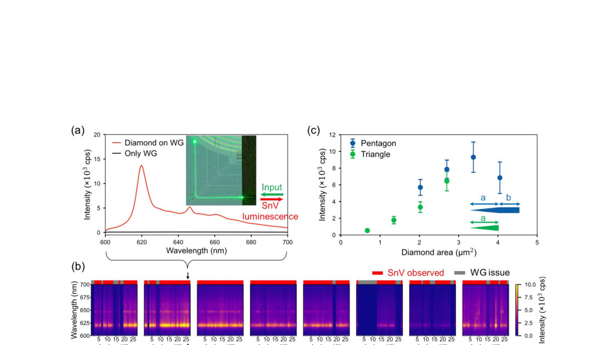
<figcaption class="paper-figure-caption"><b>Fig 3.</b> Fig. 3. Optical characterization and statistical device yield. (a) Photoluminescence spectrum of a diamond–on–Al₂O₃ waveguide device, showing the SnV⁻ ZPL emission coupled into the waveguide. Inset: Optical images under 520-nm excitation. (b) Heatmap of PL spectra collected from multiple devices across the chip, illustrating high-yield SnV⁻ emission. Devices are grouped by diamond geometry: pentagon- shaped nanobeam with triangular taper (green) and triangular taper only (blue), defined by the triangular taper length a and rectangular section length b. For each geometry, 27 devices were measured. “WG issue” represents devices with no detectable PL. (c) Statistical correlation between...</figcaption>
</figure>
</div>

<p><strong>Summary.</strong> The paper reports on the fabrication and characterization of a novel hybrid photonic chip integrating SnV color centers in diamond nanobeams with Al2O3 waveguides. By achieving clear, room-temperature guided emission, the authors demonstrate a scalable, lithography-based method for coupling solid-state quantum emitters into integrated optical circuits.</p>
<p><strong>Why it may be interesting.</strong> This work directly addresses the hardware challenge of coupling solid-state qubits to photonics, which is central to building scalable quantum networks and quantum computing architectures. The demonstrated scalability via lithography is highly relevant for AMO/Quantum Optics research.</p>
<details>
<summary>Detailed structure</summary>
<p><strong>Main problem.</strong> The primary goal is developing a scalable fabrication method to integrate solid-state quantum emitters, specifically Tin-Vacancy (SnV) centers in diamond, with integrated photonic waveguides for quantum chip applications.</p>
<p><strong>Main result.</strong> The authors successfully demonstrated efficient optical coupling by observing clear guided SnV emission at room temperature using a wafer-compatible bilayer fabrication approach. This confirms the feasibility of integrating these solid-state qubits into scalable photonic circuits.</p>
<p><strong>Method.</strong> The work involves complex, multi-step nanofabrication combining wafer bonding, precise thinning (using RIE), and lithographically defined etching to create a diamond nanobeam coupled to an Al2O3 waveguide.</p>
<p><strong>Model / system.</strong> The physical system is a vertically integrated 'diamond-on-Al2O3' dual-taper waveguide structure. The quantum element is the SnV color center acting as a solid-state qubit, whose emission is coupled into the engineered photonic waveguide.</p>
<p><strong>Key observables.</strong> Clear guided SnV- emission peak at approximately 620 nm (Zero Phonon Line), and an overall device yield of 82.9% across tested devices.</p>
<p><strong>Important parameters / regimes.</strong> The nanobeam thickness ($\sim 200 	ext{ nm}$), the waveguide material ($ ext{Al}_2   ext{O}_3$), and the operating temperature (room temperature) are critical parameters.</p>
<p><strong>Assumptions / limitations.</strong> The process assumes that the fabrication steps, particularly etching and bonding, maintain the structural integrity required for efficient optical coupling between the diamond nanobeam and the waveguide.</p>
<p><strong>Figures summary.</strong> Figures show schematic fabrication flows, SEM images confirming the physical structure of the integrated bilayer device, and PL spectra comparing emission from coupled vs. reference waveguides to validate coupling efficiency.</p>
<p><strong>Paper structure.</strong> The paper follows a progression from conceptual design (schematics) through detailed structural characterization (SEM), culminating in optical measurements (PL spectroscopy) that confirm the functional integration of the quantum emitter into the photonic platform.</p>
</details>
<details>
<summary>Abstract</summary>
<p>Tin vacancy (SnV) centers in diamond are promising solid state qubits for integrated quantum photonics. Here, we fabricate and characterize a diamond on Al2O3 dual taper waveguide structure containing SnV centers, demonstrating optical coupling between the diamond nanobeam and the underlying Al2O3 waveguide. The devices are realized using a bilayer fabrication approach compatible with wafer scale lithography. Clear guided SnV- emission is observed in all optically active devices, indicating effective optical coupling in the integrated structure. These results demonstrate a scalable fabrication approach toward integrating diamond color centers with photonic waveguides.</p>
</details>
<p><sub><a href="#top">↑ back to top</a></sub></p>

<p><a id="paper-2606.19009"></a></p>
<h3 id="observation-of-anyonic-thermodynamics-and-generalized-pauli-principle"><a href="http://arxiv.org/abs/2606.19009v1">Observation of anyonic thermodynamics and generalized Pauli principle</a></h3>
<p><strong>Authors:</strong> Fansu Wei, Chi Zhang, Zimeng Ye, Dengbo Wang, Botao Wang, Xiaoji Zhou, Hepeng Yao<br>
<strong>Type:</strong> both · <strong>Category:</strong> quantum gases · <strong>PDF:</strong> <a href="https://arxiv.org/pdf/2606.19009v1">https://arxiv.org/pdf/2606.19009v1</a><br>
<strong>Analysis basis:</strong> full PDF text, analyzed in chunks
<strong>Topic relevance:</strong> 🔥 <code>analog quantum simulation</code> <strong>4/5</strong> · <code>non-equilibrium dynamics</code> <strong>2/5</strong> · <code>driven-dissipative phase transition</code> <strong>1/5</strong> · <code>entanglement &amp; information structure</code> <strong>1/5</strong> · <code>non-equilibrium universality</code> <strong>1/5</strong></p>
<div class="figure-strip-hint">↔ Scroll figures horizontally</div>
<div class="paper-figures-scroll">
<figure class="paper-figure-card">
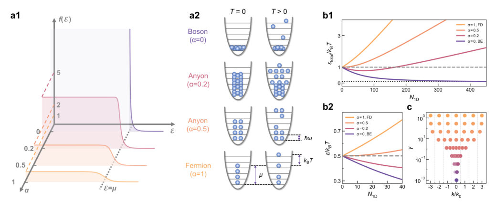
<figcaption class="paper-figure-caption"><b>Fig 1.</b> Figure 1. Illustration of the anyonic generalized exclusion statistics. a1, Mean occupation number f(E) versus state energy E at finite temperature for generalized exclusion statistics with different statistical parameter α. The curves represent Bose-Einstein (BE, α = 0, purple), Fermi-Dirac (FD, α = 1, orange), and two typical anyonic (α = 0.2, light purple; α = 0.5, dark orange) distributions. µ denotes the chemical potential. At high energies (E ≫µ), all distributions asymptotically approach zero. At lower energies, f(E) increases and saturates at the statistical upper bound 1/α, consistent with the generalized Pauli exclusion principle. a2, Schematic of state occupations in a 1D...</figcaption>
</figure>
<figure class="paper-figure-card">
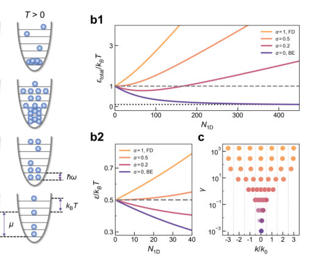
<figcaption class="paper-figure-caption"><b>Fig 2.</b> Fig. 1a2. According to this filling pattern, the total energy per particle εtotal and its related equation of state can serve as a good indicator for determining α [28]. In Fig. 1b, we plot εtotal as a function of 1D particle number N1D for ideal gases under different statistical distributions based on Eqs. (1, 2). In the dilute limit N1D →0, the identical particle postulate of quantum mechanics fails and all types of statistics collapse into the classical Maxwell-Boltzmann limit. According to the equi-partition theorem, it reads εtotal = ε + εV = kBT (black dashed line) with ε and εV the averaged internal and external potential energies, respectively.</figcaption>
</figure>
<figure class="paper-figure-card">
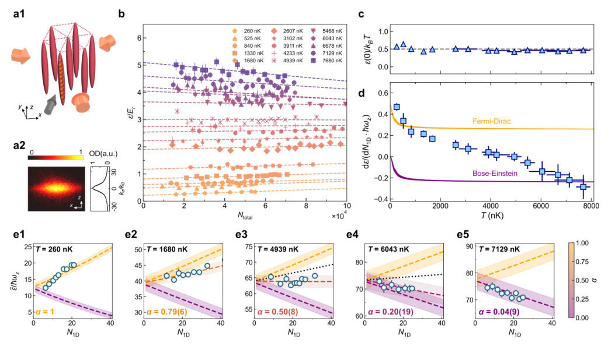
<figcaption class="paper-figure-caption"><b>Fig 3.</b> Figure 2. Observation of the equation of state for anyonic thermodynamics. a1, Experimental realization of 1D Bose molecular gases in tubes formed by 2D triangular optical lattices. The lattice is created by three coherent traveling-wave laser beams arranged at 120◦to each other (yellow arrow). Imaging is performed perpendicular to the tubes, at 30◦to one lattice beam path (grey arrow). a2, Typical time-of-flight absorption images for T = 260(10) nK and as = 743a0. The right panel shows the obtained momentum distribution n(kz) along the z- direction. b, The energy per particle ε (in units of the recoil energy Er) as a function of total particle number Ntotal for different temperatures T...</figcaption>
</figure>
<figure class="paper-figure-card">
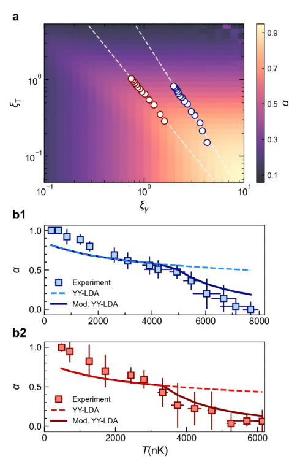
<figcaption class="paper-figure-caption"><b>Fig 4.</b> Figure 3. Phase diagram of statistical parameter α. a, Phase dia- gram of the statistical parameter α as a function of reduced temper- ature ξT and reduced interaction ξγ, computed from YY-LDA. The color code indicates crossover from fermionic statistics (α = 1, or- ange) to bosonic statistics (α = 0, purple). The parameter ranges for experimental measurements are indicated for V2D = 10Er (blue cir- cles, measurement in Fig. 2b) and V2D = 5Er (red circles), with their linear fit on a log-log scale (dashed lines). b1, The measured statis- tical parameters α as a function of temperature T (squares), together with the corresponding theoretical predictions from (a) (dashed line). The solid line...</figcaption>
</figure>
<figure class="paper-figure-card">
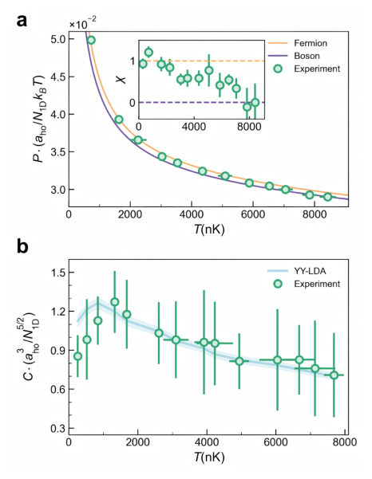
<figcaption class="paper-figure-caption"><b>Fig 5.</b> Figure 4. Measurement of anyonization in other thermodynamic properties. a, Pressure P as a function of temperature T (green circles), together with the analytical curves of FD and BE statis- tics (orange and purple solid lines). The inset shows the metric χ = (PExp −PB)/(PF −PB) for evaluating the statistics. b, The detected Tan’s contact C versus temperature. The green cir- cles are experimental data obtained by taking the difference between the measurements at magnetic fields of 680 G (γ ≃20.4) and 690 G (γ ≃23.4), and the blue line is the YY-LDA result. All experimental results are averaged over 60 realizations.</figcaption>
</figure>
</div>

<p><strong>Summary.</strong> The research demonstrates the experimental observation of anyonic thermodynamics in a 1D strongly interacting quantum gas. By measuring thermodynamic signatures like the equation of state and pressure, the authors confirm that the system obeys Generalized Exclusion Statistics (GES). This work establishes a versatile platform for engineering and studying fractional statistics in quantum matter.</p>
<p><strong>Why it may be interesting.</strong> This work provides a highly controlled platform for observing fundamental quantum statistics beyond standard bosons and fermions, which is crucial for understanding exotic matter states in ultracold atomic systems.</p>
<details>
<summary>Detailed structure</summary>
<p><strong>Main problem.</strong> The primary goal is to experimentally realize and detect anyonic thermodynamics governed by generalized exclusion statistics (GES) in a quantum gas system.</p>
<p><strong>Main result.</strong> The authors successfully measured the equation of state, showing a continuous crossover from fermionic ($\alpha 	o 1$) to bosonic ($\alpha 	o 0$) statistics, providing direct evidence for the generalized Pauli principle.</p>
<p><strong>Method.</strong> Measurements involve analyzing the equation of state and other thermodynamic quantities (like pressure and Tan's contact) by tuning temperature and interaction strength in a 1D quantum gas.</p>
<p><strong>Model / system.</strong> The system is a one-dimensional strongly interacting quantum gas, modeled using the Lieb-Liniger Hamiltonian for ${}^6	ext{Li}_2$ molecules confined in optical lattices. The theory relies on mapping dynamics to statistical exclusion via GES.</p>
<p><strong>Key observables.</strong> Equation of state ($\epsilon_{	ext{total}}$ vs $N_{1	ext{D}}$), pressure ($P$), Tan's contact ($C$), and the effective statistical parameter $\alpha$.</p>
<p><strong>Important parameters / regimes.</strong> Statistical parameter $\alpha$ (interpolating between 0 and 1), temperature ($T$), interaction strength ($\gamma$), and particle number ($N_{1	ext{D}}$).</p>
<p><strong>Assumptions / limitations.</strong> The analysis often relies on the local-density approximation (LDA) when treating trapped systems, and a bijective mapping is used to relate dynamical interactions to statistical exclusion in 1D.</p>
<p><strong>Figures summary.</strong> Figures illustrate the crossover of $\epsilon_{	ext{total}}$ vs $N_{1	ext{D}}$ across different $\alpha$ values; other figures show pressure ($P$) and Tan's contact ($C$) measurements confirming the FD-BE crossover trend.</p>
<p><strong>Paper structure.</strong> The paper establishes the theoretical framework connecting anyons to GES, details the experimental setup in 1D quantum gases, presents measurements of thermodynamic quantities (equation of state, pressure), and concludes by quantifying the continuous statistical crossover via $\alpha$.</p>
</details>
<details>
<summary>Abstract</summary>
<p>Anyons are quasiparticles with quantum statistics interpolating between those of bosons and fermions. Two distinct manifestations of anyonic behaviour have been theoretically established: fractional exchange statistics where particle exchange can produce any phase, and generalized exclusion statistics which extends the Pauli exclusion principle. While anyons exhibiting fractional exchange statistics have been observed in diverse platforms, experimental realizations of generalized exclusion statistics and direct measurements of its thermodynamic signatures have remained elusive. Here, we realize an anyonic thermodynamic ensemble obeying generalized exclusion statistics and detect its anyonic thermodynamics in a one-dimensional strongly interacting quantum gas. To achieve this, we exploit the bijective mapping between dynamical and statistical interactions in one dimension. By tuning interaction strength and temperature over a wide range, we measure the equation of state and identify clear departures from Bose-Einstein and Fermi-Dirac statistics. These deviations are quantitatively captured by generalized exclusion statistics, providing direct evidence for the generalized Pauli principle. Independent probes of other thermodynamic quantities including pressure and the Tan contact further validate this framework. Our results establish a versatile platform for engineering anyonic exclusion statistics and open the door to thermodynamic applications of anyons in quantum technologies.</p>
</details>
<p><sub><a href="#top">↑ back to top</a></sub></p>

<p><a id="paper-2606.18415"></a></p>
<h3 id="entanglement-response-to-temperature-in-interacting-two-qubit-thermal-states"><a href="http://arxiv.org/abs/2606.18415v1">Entanglement response to Temperature in Interacting Two-Qubit Thermal States</a></h3>
<p><strong>Authors:</strong> Zain H. Saleem, Iram Saleem<br>
<strong>Type:</strong> theory · <strong>Category:</strong> statistical mechanics · <strong>PDF:</strong> <a href="https://arxiv.org/pdf/2606.18415v1">https://arxiv.org/pdf/2606.18415v1</a><br>
<strong>Analysis basis:</strong> full PDF text, analyzed in chunks
<strong>Topic relevance:</strong> 🔥 <code>entanglement &amp; information structure</code> <strong>4/5</strong> · <code>Keldysh / 2PI / non-Gaussian methods</code> <strong>1/5</strong> · <code>correlated / nonlocal dissipation</code> <strong>1/5</strong> · <code>driven-dissipative phase transition</code> <strong>1/5</strong></p>
<div class="figure-strip-hint">↔ Scroll figures horizontally</div>
<div class="paper-figures-scroll">
<figure class="paper-figure-card">
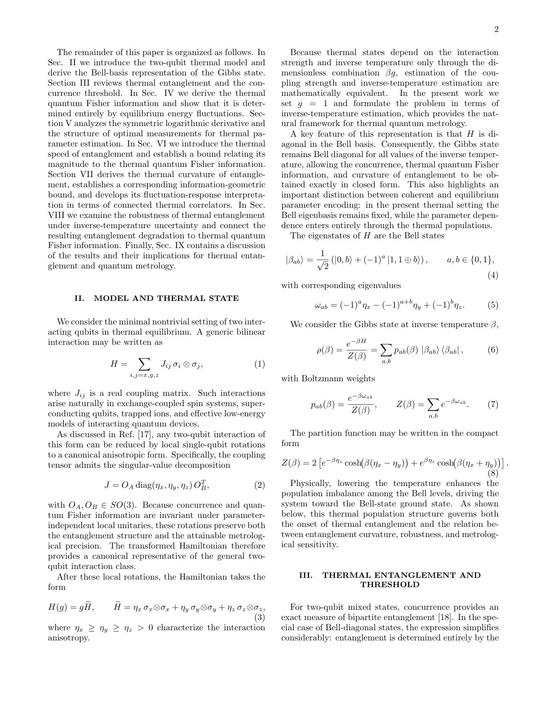
<figcaption class="paper-figure-caption"><b>Fig 1.</b> Low-resolution page preview, page 2</figcaption>
</figure>
<figure class="paper-figure-card">
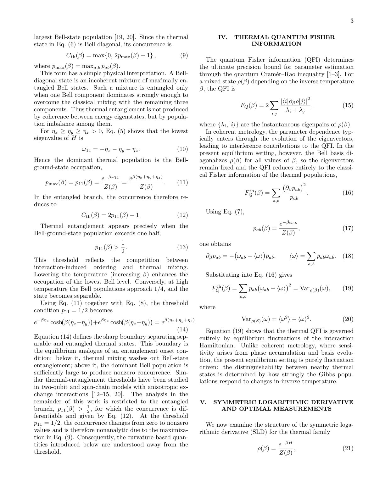
<figcaption class="paper-figure-caption"><b>Fig 2.</b> Low-resolution page preview, page 3</figcaption>
</figure>
<figure class="paper-figure-card">
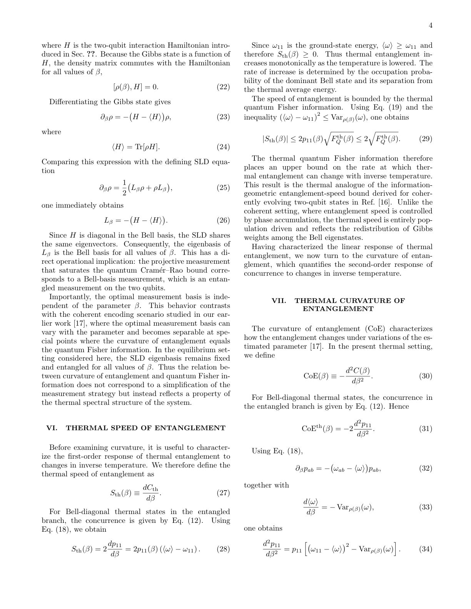
<figcaption class="paper-figure-caption"><b>Fig 3.</b> Low-resolution page preview, page 4</figcaption>
</figure>
<figure class="paper-figure-card">
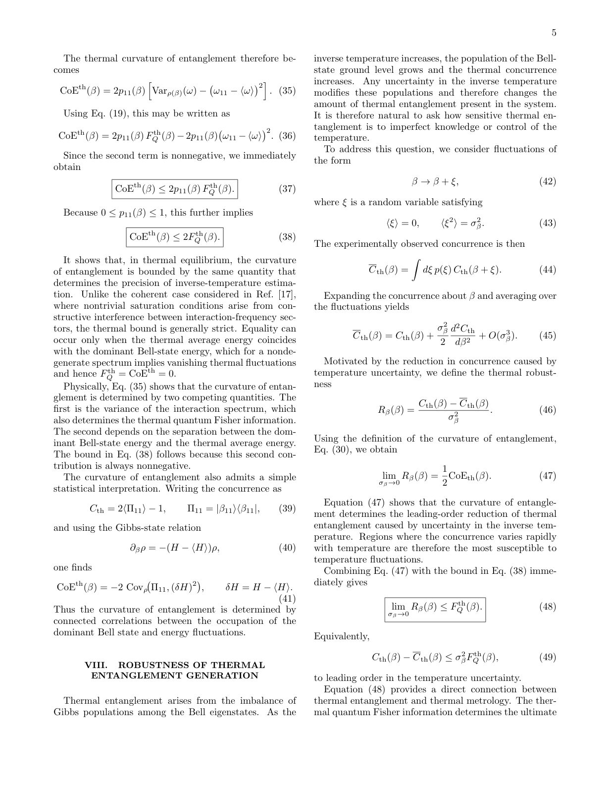
<figcaption class="paper-figure-caption"><b>Fig 4.</b> Low-resolution page preview, page 5</figcaption>
</figure>
<figure class="paper-figure-card">
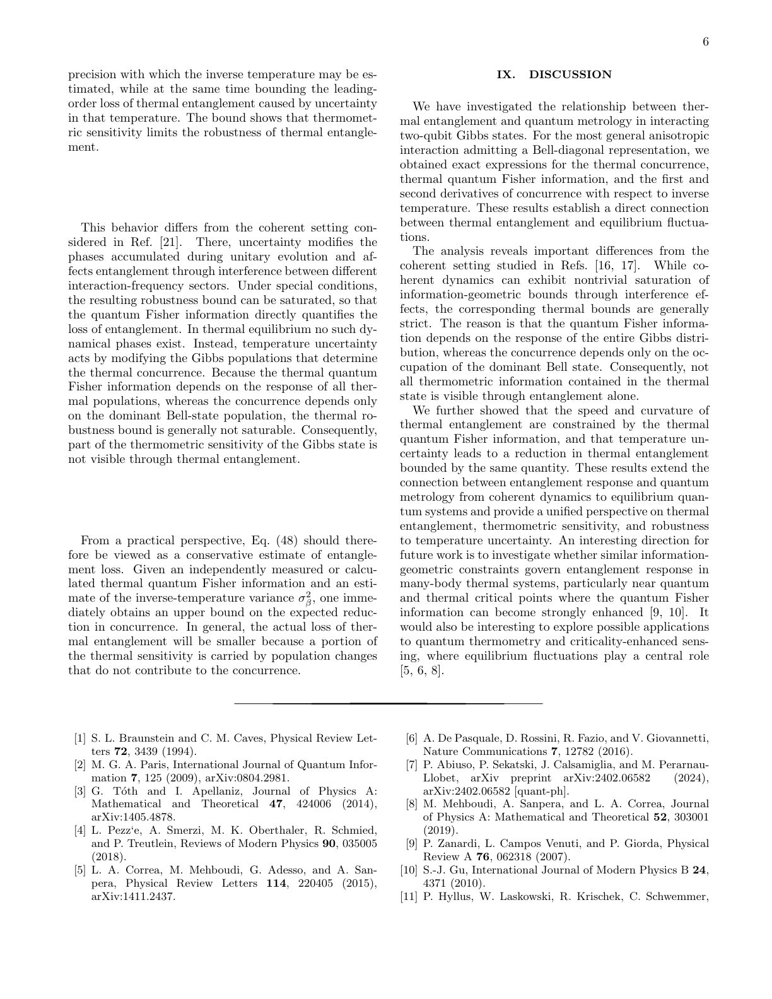
<figcaption class="paper-figure-caption"><b>Fig 5.</b> Low-resolution page preview, page 6</figcaption>
</figure>
</div>

<p><strong>Summary.</strong> This paper analyzes the entanglement response of interacting two-qubit systems to temperature changes by deriving exact expressions for thermal concurrence and TQFI. It establishes that both how fast entanglement changes with temperature and how much it degrades due to temperature uncertainty are fundamentally limited by the system's TQFI. This provides a new, fluctuation-based constraint on quantum information in thermal equilibrium.</p>
<p><strong>Why it may be interesting.</strong> This work provides a rigorous link between quantum information measures (entanglement) and fundamental thermodynamic/metrological quantities (QFI) in an equilibrium setting, which is crucial for understanding sensing near critical points or thermalization processes.</p>
<details>
<summary>Detailed structure</summary>
<p><strong>Main problem.</strong> The study investigates how entanglement, quantified by thermal concurrence, changes when subjected to variations in temperature within interacting two-qubit systems.</p>
<p><strong>Main result.</strong> The rate of change and the loss due to temperature uncertainty in thermal entanglement are fundamentally bounded by the Thermal Quantum Fisher Information (TQFI).</p>
<p><strong>Method.</strong> The authors derived exact analytical expressions for various thermal observables, including concurrence and TQFI derivatives, using the properties of the Gibbs state.</p>
<p><strong>Model / system.</strong> The system is an interacting two-qubit model analyzed in thermal equilibrium, described by a general interaction Hamiltonian $H$ leading to a Gibbs state $
ho(eta)$.</p>
<p><strong>Key observables.</strong> Thermal Concurrence ($C_{	ext{th}}(eta)$), Thermal Quantum Fisher Information ($   ext{F}_{th}^Q(eta)$), and their first/second derivatives with respect to inverse temperature ($eta$).</p>
<p><strong>Important parameters / regimes.</strong> Inverse temperature ($eta$), the entanglement threshold defined by $p_{11}(eta) = 1/2$, and temperature uncertainty ($\sigma_eta^2$).</p>
<p><strong>Assumptions / limitations.</strong> The analysis is restricted to two interacting qubits, assuming the Hamiltonian can be analyzed in a canonical anisotropic form.</p>
<p><strong>Paper structure.</strong> The paper establishes the framework by defining thermal entanglement and TQFI for the system. It then derives key bounds showing that both the rate of change and the robustness against temperature uncertainty are constrained by $  ext{F}_{th}^Q(eta)$. Finally, it discusses the implications of these bounds compared to coherent dynamics.</p>
</details>
<details>
<summary>Abstract</summary>
<p>We investigate the response of entanglement to temperature variations in interacting two-qubit thermal states. For a general two-qubit interaction Hamiltonian, we derive exact expressions for the thermal concurrence, its first and second derivatives with respect to inverse temperature, and the thermal quantum Fisher information. We show that the rate of change of thermal entanglement is bounded by the thermal quantum Fisher information. We further derive a bound relating entanglement curvature and thermal quantum Fisher information, and show that temperature uncertainty induces a loss of entanglement bounded by the same quantity that determines thermometric sensitivity. These results establish thermal quantum Fisher information as a fundamental constraint on the response and robustness of entanglement in interacting two-qubit thermal states.</p>
</details>
<p><sub><a href="#top">↑ back to top</a></sub></p>

<p><a id="paper-2606.18522"></a></p>
<h3 id="piezoelectric-resonators-in-thin-film-barium-titanate-from-room-temperature-to-millikelvin"><a href="http://arxiv.org/abs/2606.18522v1">Piezoelectric resonators in thin-film barium titanate from room temperature to millikelvin</a></h3>
<p><strong>Authors:</strong> Hao Tian, Shu-Yuan Chang, Nuha Akhtar, Kasra Sardashti, Mohammad Mirhosseini<br>
<strong>Type:</strong> both · <strong>Category:</strong> quantum information and computing · <strong>PDF:</strong> <a href="https://arxiv.org/pdf/2606.18522v1">https://arxiv.org/pdf/2606.18522v1</a><br>
<strong>Analysis basis:</strong> full PDF text, analyzed in chunks
<strong>Topic relevance:</strong> 🔥 <code>QC/QI experiment</code> <strong>4/5</strong> · <code>analog quantum simulation</code> <strong>1/5</strong> · <code>correlated cavity matter</code> <strong>1/5</strong> · <code>spintronics-quantum-optics interface</code> <strong>1/5</strong></p>
<div class="figure-strip-hint">↔ Scroll figures horizontally</div>
<div class="paper-figures-scroll">
<figure class="paper-figure-card">
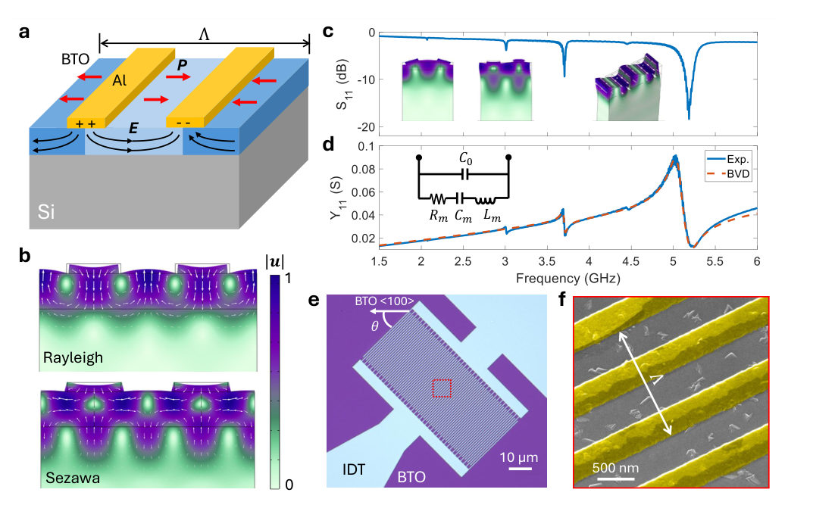
<figcaption class="paper-figure-caption"><b>Fig 1.</b> FIG. 1. Device design and characterization. a, Three-dimensional (3D) schematic showing one period Λ of the IDT, with aluminum (yellow) electrodes. The black and red arrows denote the electric field and polarization in BTO, respectively. b, Numerical simulation of higher-order Rayleigh (top) and Sezawa (bottom) modes matched with the periodically poled IDT. The colormap is the normalized displacement magnitude u with white arrows denoting the displacement direction. c, Measured microwave reflection spectrum (S11) of a typical IDT under 30 V bias. Insets from left to right are mode profiles for the fundamental Rayleigh and Sezawa modes, and the shear horizontal mode. d, Calibrated admittance...</figcaption>
</figure>
<figure class="paper-figure-card">
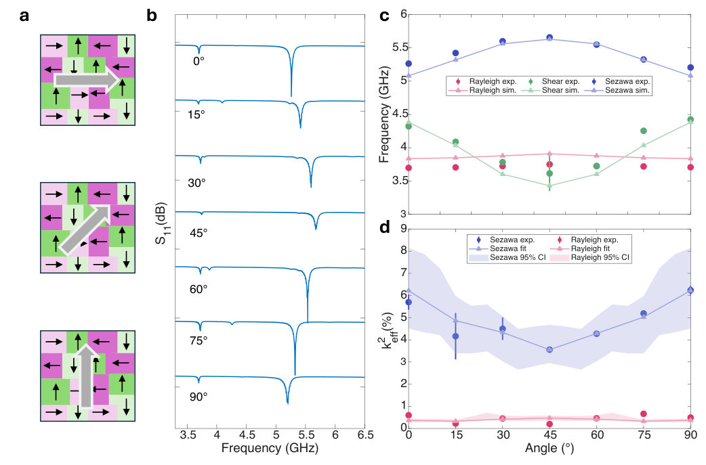
<figcaption class="paper-figure-caption"><b>Fig 2.</b> FIG. 2. Orientation dependence of the BTO SAW resonators. a, Schematics of the multi-domain BTO model. The elastic and piezoelectric properties of the thin film is modeled as a mosaic ensemble of single domains with four orthogonal polarizations. The IDT is rotated relative to the BTO lattice from 0◦to 90◦(top to bottom). The black and gray arrows represent polarizations of each domain and the direction of IDT, respectively. b, S11 spectra under different IDT orientations. Traces are offset vertically for better visibility, with spacing between y-ticks of 50 dB. Angle dependence of c, the mechanical frequencies and d, k2 eff for Rayleigh (red), shear (green), and Sezawa (blue) modes....</figcaption>
</figure>
<figure class="paper-figure-card">
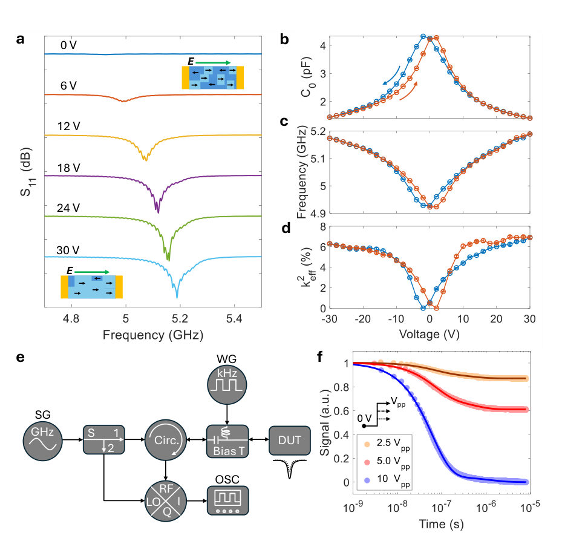
<figcaption class="paper-figure-caption"><b>Fig 3.</b> FIG. 3. Reconfigurable BTO SAW resonator. a, S11 response of the Sezawa mode with an increasing biasing voltage from 0 to 30 V (top to bottom). Each trace is vertically shifted for better illustration. The spacing between y-ticks is 20 dB. The insets schematically show the initial and final polarization states after aligning with the external electric field. b- d, Hysteresis curves measured with increasing (red) and decreasing (blue) DC bias for intrinsic capacitance C0, resonant frequency, and electromechanical coupling k2 eff, respectively. The error bar is the standard deviation from the measurements of four consecutive loops. e, Schematic of the setup for measuring the switching...</figcaption>
</figure>
<figure class="paper-figure-card">
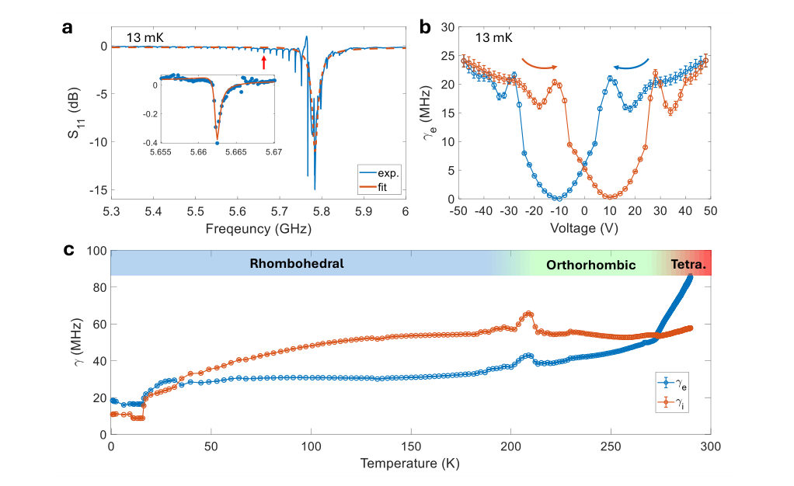
<figcaption class="paper-figure-caption"><b>Fig 4.</b> FIG. 4. Temperature dependence of BTO’s piezoelectric response a, Measured S11 spectrum (blue) at 13 mK together with fitting (red dashed line) used to extract external coupling γe. Inset highlights one of the bulk acoustic modes (red arrow) with a fitted linewidth of 80 kHz. b, Hysteresis curve of γe at 13 mK up to 50 V, showing an increased coercive field and remanent polarization. c, External (γe, blue) and internal (γi, red) coupling rates as a function of temperature from 300 K to 0.7 K. Shaded color band marks the corresponding phase transition of BTO. The error bars in b and c are 95% CI from nonlinear fitting. The bias in a and c is 30 V.</figcaption>
</figure>
</div>

<p><strong>Summary.</strong> This paper thoroughly characterizes thin-film Barium Titanate (BTO) resonators, demonstrating its strong piezoelectric response from room temperature down to cryogenic temperatures. By measuring SAW resonances and analyzing ferroelectric switching dynamics, the authors establish that BTO remains a viable, highly coupled platform for both classical RF electronics and emerging superconducting quantum circuits.</p>
<p><strong>Why it may be interesting.</strong> The demonstration that a classical ferroelectric material like BTO maintains significant coupling strength ($d_{33,	ext{eff}}$) down to the millikelvin regime is highly relevant for integrating solid-state transducers into superconducting quantum circuits and quantum memories.</p>
<details>
<summary>Detailed structure</summary>
<p><strong>Main problem.</strong> The study characterizes the piezoelectric properties of thin-film Barium Titanate (BTO) across a wide temperature range, specifically investigating its potential for coupling in superconducting quantum circuits.</p>
<p><strong>Main result.</strong> Thin-film BTO exhibits strong piezoelectric coupling ($d_{33,	ext{eff}} \approx 19 	ext{ pC/N}$ at millikelvin), which persists down to cryogenic temperatures, making it a promising platform for both classical RF and quantum information technologies.</p>
<p><strong>Method.</strong> The research combines microwave characterization of Surface Acoustic Wave (SAW) resonators with finite-element modeling and scaling relations to extract effective piezoelectric coefficients across temperature regimes.</p>
<p><strong>Model / system.</strong> The physical system is an Interdigital Transducer (IDT) fabricated on thin-film BTO deposited on a Si substrate. The analysis models the material's ferroelectric, piezoelectric, and elastic responses under varying DC bias and cryogenic temperatures.</p>
<p><strong>Key observables.</strong> Electromechanical coupling coefficient ($k_{2	ext{eff}}$), effective piezoelectric coefficients ($d_{31}, d_{33}, d_{15}$), resonance frequency shifts, and the temperature dependence of these parameters.</p>
<p><strong>Important parameters / regimes.</strong> Temperature range (Room Temperature to millikelvin); high electromechanical coupling ($\sim 14\%$) and fast switching dynamics ($\sim 100 	ext{ ns}$).</p>
<p><strong>Assumptions / limitations.</strong> The analysis relies on extracting coefficients via scaling relations at cryogenic temperatures due to measurement limitations, and assumes the persistence of piezoelectric coupling mechanisms.</p>
<p><strong>Figures summary.</strong> Figures show SAW resonance spectra ($S_{11}$) at various temperatures, hysteresis loops ($\gamma_e$) demonstrating ferroelectric switching, and plots detailing the temperature dependence of coupling rates and coefficients.</p>
<p><strong>Paper structure.</strong> The work progresses from characterizing room-temperature performance (high $k_{2	ext{eff}}$) to studying voltage-controlled reconfigurability, culminating in detailed measurements and analysis of piezoelectric response at millikelvin temperatures for quantum applications.</p>
</details>
<details>
<summary>Abstract</summary>
<p>Ferroelectric materials, with their strong nonlinearities, underpin key technologies across radio-frequency (RF) signal processing, optical communications, and emerging quantum systems. Barium titanate (BTO) is a notable example, combining strong piezoelectric and electro-optic responses. While bulk BTO has been studied for decades, the piezoelectric properties of its recently available thin films, and their behavior at the millikelvin temperatures relevant to quantum hardware, remain largely unexplored. Here, we fabricate and characterize surface acoustic wave (SAW) resonators on thin-film BTO. The measured devices exhibit high electromechanical coupling (k2eff 0.14 at 5.2 GHz) and operate up to 7.8 GHz. From these measurements, combined with finite-element modeling of the multi-domain microstructure, we extract an effective piezoelectric coefficient d33eff of 53 pC/N, comparable to bulk BTO. Exploiting the intrinsic ferroelectricity, we further demonstrate low-voltage switching with a fast (100 ns) response, attractive for reconfigurable RF front-ends and parametric amplifiers. Extending these measurements to millikelvin temperatures, we find that the piezoelectric response persists, with d33eff 19 pC/N, pointing to the potential of BTO for piezoelectric coupling in superconducting quantum circuits. These results position thin-film BTO as a promising piezoelectric platform for both classical and quantum information technologies.</p>
</details>
<p><sub><a href="#top">↑ back to top</a></sub></p>

<p><a id="paper-2606.18529"></a></p>
<h3 id="tunable-chaos-in-the-finite-mean-syk-model"><a href="http://arxiv.org/abs/2606.18529v1">Tunable Chaos in the Finite Mean SYK Model</a></h3>
<p><strong>Authors:</strong> Arkaprava Mukherjee, Sumilan Banerjee, Sandip P. Trivedi, Nandini Trivedi<br>
<strong>Type:</strong> theory · <strong>Category:</strong> strongly correlated electrons · <strong>PDF:</strong> <a href="https://arxiv.org/pdf/2606.18529v1">https://arxiv.org/pdf/2606.18529v1</a><br>
<strong>Analysis basis:</strong> full PDF text, analyzed in chunks
<strong>Topic relevance:</strong> 🔥 <code>entanglement &amp; information structure</code> <strong>4/5</strong> · <code>non-equilibrium dynamics</code> <strong>2/5</strong> · <code>non-equilibrium universality</code> <strong>1/5</strong></p>
<div class="figure-strip-hint">↔ Scroll figures horizontally</div>
<div class="paper-figures-scroll">
<figure class="paper-figure-card">
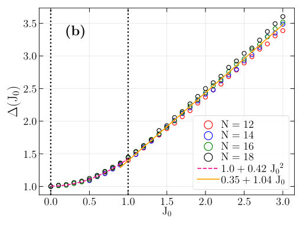
<figcaption class="paper-figure-caption"><b>Fig 1.</b> FIG. 2. a) Density of states ρ(E) for N = 18, and δJ = 1, for changing mean values J0 (different colors). (b) Scaling of the energy spread ∆as a function of J0 for different N (indicated by different colors). For J0 &lt; 1, a quadratic fit (dashed line) and for 1 &lt; J0 &lt; 3, a linear fit (solid line) have been used.</figcaption>
</figure>
<figure class="paper-figure-card">
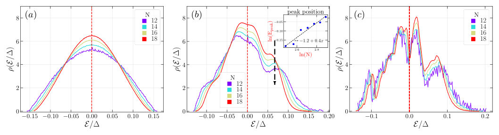
<figcaption class="paper-figure-caption"><b>Fig 2.</b> FIG. 3. Many-body density of states for different N for a) J0 = 0, J = 1, b) J0 = 3, J = 1, c) J0 = 1, J = 0. Inset figure in b) shows the position of the positive peak energy as a function of N in a log-log Plot.</figcaption>
</figure>
<figure class="paper-figure-card">
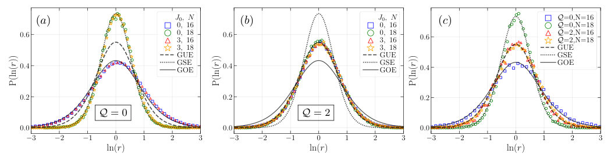
<figcaption class="paper-figure-caption"><b>Fig 3.</b> FIG. 4. Plot of the probability P(r) where r is the ratio of the energy separation of the ith energy level from the one below relative to the one above, as a function of ln(r), showing agreement with RMT ensembles (GUE, GOE, GSE). a) Q = 0 sector, for N = 16, 18, and J0 = 0, 3, δJ = 1; b) Q = 2 sector for N = 16, 18 and J0 = 0, 3 δJ = 1; c) Fixed coupling model with δJ = 0, for Q = 0, 2. In all the plots two values of N = 16, 18 are shown and J0 = 1.</figcaption>
</figure>
<figure class="paper-figure-card">
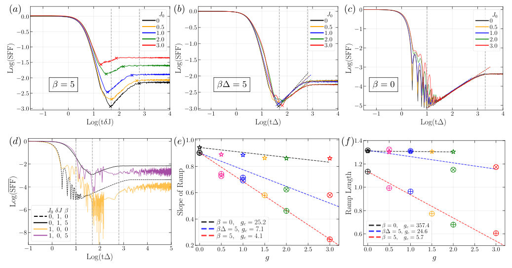
<figcaption class="paper-figure-caption"><b>Fig 4.</b> FIG. 5. (a), (b), (c): Spectral form factor SFF for different mean values, J0, at β = 5 and β = 0. (d) SFF for zero mean (J0 = 0, δJ = 1), and zero standard deviation (δJ = 0, J0 = 1). (e) Slope of the ramp region extracted from (a), (b) as a fuunction of g = J0/δJ (ratio of mean-to-standard deviation ). (f) The length of the ramp region obtained from (a) and (b) as a function of g.</figcaption>
</figure>
<figure class="paper-figure-card">
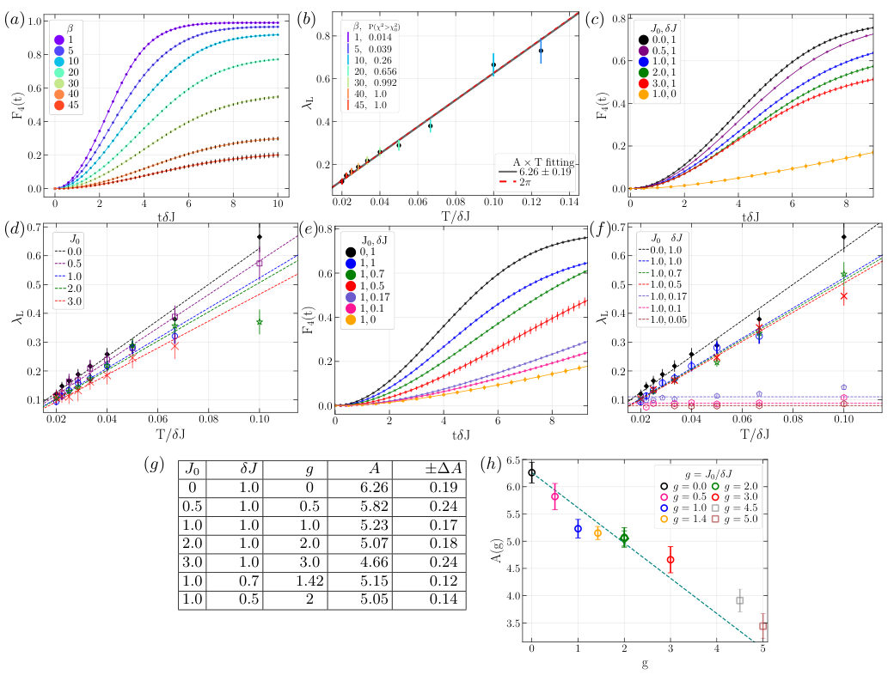
<figcaption class="paper-figure-caption"><b>Fig 5.</b> FIG. 6. a) OTOCs with J0 = 0 at different values of β. b) Lyapunov exponent as a function of β, for J0 = 0. Black curve from fitting data, and red curve for Lyapunov exponent saturating the chaos bound, in good agreement. c) OTOCs for varying J0 at β = 20, and δJ = 1; showing that the rate of increase of F4 slows down as J0 increases. d)Lyapunov exponent λL vs T/δJ showing agreement with fast scrambling behaviour, eq.(40). The coefficient A becomes smaller as J0 increases. e) OTOCs for varying δJ, keeping J0 = 1, and β = 20. Black curve is for J0 = 0, δJ = 1, β = 20. f) λL plotted against T, with a linear fit confirming the fast scrambling behavior. A deviation from this behavior is...</figcaption>
</figure>
</div>

<p><strong>Summary.</strong> The paper explores the generalized SYK model by varying the mean-to-standard deviation ratio of its random couplings. It demonstrates a continuous crossover from highly chaotic behavior (maximal scrambling) towards less chaotic regimes as disorder is tuned. This work highlights that different measures of quantum chaos can decouple, providing deeper insights into the relationship between entropy and maximal chaos in strongly correlated systems.</p>
<p><strong>Why it may be interesting.</strong> This work provides a detailed theoretical framework for understanding how tuning disorder in strongly interacting fermionic systems modifies fundamental concepts like maximal chaos and scrambling, which are central to holographic theories and condensed matter physics.</p>
<details>
<summary>Detailed structure</summary>
<p><strong>Main problem.</strong> The study investigates how tuning the mean-to-standard-deviation ratio ($g$) of random couplings affects the chaotic properties of the Sachdev-Ye-Kitaev (SYK) model, exploring a crossover between chaotic and non-chaotic regimes.</p>
<p><strong>Main result.</strong> Increasing $g$ causes a continuous chaotic-to-non-chaotic crossover in scrambling dynamics; crucially, different measures of chaos decouple, showing that finite residual entropy does not mandate maximal chaos.</p>
<p><strong>Method.</strong> The analysis employs multiple quantum chaos diagnostics—including Lyapunov exponents (from OTOCs), spectral form factors (SFF), and nearest-neighbor level spacing statistics—across varying disorder parameters.</p>
<p><strong>Model / system.</strong> The system is the generalized Sachdev-Ye-Kitaev (SYK) model, featuring fermions with all-to-all interactions whose complex couplings are drawn from a Gaussian distribution parameterized by $g = J_0/\deltaJ$.</p>
<p><strong>Key observables.</strong> Lyapunov exponent ($\lambda_L$), Residual Entropy ($S_0/N$), Out-of-Time Correlators (OTOCs), Spectral Form Factor (SFF), and nearest-neighbor energy level spacing statistics.</p>
<p><strong>Important parameters / regimes.</strong> The tuning parameter $g = J_0/\deltaJ$, which controls the degree of randomness in the couplings, ranging from $g=0$ (standard SYK) to $g 	o \infty$ (clean limit).</p>
<p><strong>Assumptions / limitations.</strong> Numerical simulations rely on Exact Diagonalization (ED) for finite system sizes ($N$), and the analysis assumes self-averaging properties hold in the thermodynamic limit.</p>
<p><strong>Figures summary.</strong> Figures summarize the evolution of chaos diagnostics across varying $g$, showing $\lambda_L$ decreasing from $2\pi T$ to zero, while level repulsion persists and residual entropy remains finite.</p>
<p><strong>Paper structure.</strong> The paper systematically analyzes spectral density ($
ho(E)$), entanglement entropy ($S_A$), and various time-domain chaos measures (OTOCs, SFF) as functions of the disorder parameter $g$, demonstrating the decoupling between these different indicators of quantum chaos.</p>
</details>
<details>
<summary>Abstract</summary>
<p>The complex Sachdev-Ye-Kitaev (SYK) model, featuring fermions with all-to-all interactions, serves as a dual paradigm for understanding non-Fermi liquid behavior and the holographic nature of charged black holes. Two defining characteristics of the standard SYK model are its maximal chaos (Lyapunov exponent $λ_{\mathrm{L}}=2πT$ at temperature $T$), and its finite zero-temperature residual entropy. While previous studies have largely focused on couplings drawn from a zero-mean Gaussian distribution, we investigate a generalized model with a finite mean-to-standard-deviation ratio, $g\equiv J_{0}/δJ$ of the coupling distribution in order to get deeper insight into the evolution of chaos. We find that increasing $g$ yields the following effects: (i) The system remains a fast scrambler with $λ_{\mathrm{L}}=A~T$, but with a suppressed coefficient $A<2π$. (ii) In the limit $g\to \infty$, out-of-time-ordered correlators (OTOCs) no longer exhibit exponential growth with $λ_{\mathrm{L}}\simeq 0$. (iii) The spectral correlations indicative of late-time chaos maintain Wigner-Dyson level spacing statistics for all values of $g$. (iv) The system preserves a finite residual entropy, albeit with reduced magnitude, for all $g$ values. We conclude that in this generalized SYK model, there is a chaotic to non-chaotic crossover. Moreover different measures of chaos decouple, demonstrating that the presence of finite residual entropy does not strictly imply maximal chaos.</p>
</details>
<p><sub><a href="#top">↑ back to top</a></sub></p>

<p><a id="paper-2606.18361"></a></p>
<h3 id="universal-entanglement-probes-of-topological-order-and-locally-achiral-manifolds"><a href="http://arxiv.org/abs/2606.18361v1">Universal entanglement probes of topological order and locally-achiral manifolds</a></h3>
<p><strong>Authors:</strong> Yarden Sheffer<br>
<strong>Type:</strong> theory · <strong>Category:</strong> other · <strong>PDF:</strong> <a href="https://arxiv.org/pdf/2606.18361v1">https://arxiv.org/pdf/2606.18361v1</a><br>
<strong>Analysis basis:</strong> full PDF text, analyzed in chunks
<strong>Topic relevance:</strong> 🔥 <code>entanglement &amp; information structure</code> <strong>4/5</strong> · <code>analog quantum simulation</code> <strong>2/5</strong> · <code>Keldysh / 2PI / non-Gaussian methods</code> <strong>1/5</strong></p>
<div class="figure-strip-hint">↔ Scroll figures horizontally</div>
<div class="paper-figures-scroll">
<figure class="paper-figure-card">
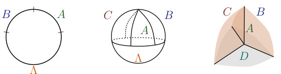
<figcaption class="paper-figure-caption"><b>Fig 1.</b> Figure 1: Partition of the 1,2 and 3-sphere into regions. The 3-sphere is considered as R3 compactified at infinity.</figcaption>
</figure>
<figure class="paper-figure-card">
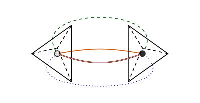
<figcaption class="paper-figure-caption"><b>Fig 2.</b> Figure 2: The “trivial” multi entropy ⟨ψ|ψ⟩defines the manifold SD by gluing two D-simplexes, and the appropriate gem, here shown for D = 3.</figcaption>
</figure>
<figure class="paper-figure-card">
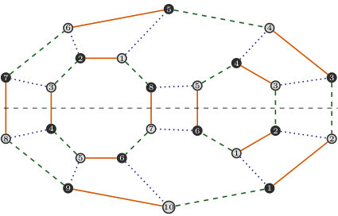
<figcaption class="paper-figure-caption"><b>Fig 3.</b> Figure 6: A gem of S2 with three cycles in G12 and n1, n2, n3 = 6, 8, 10. The dashed line represents the reflection plane.</figcaption>
</figure>
<figure class="paper-figure-card">
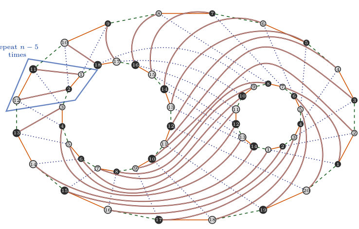
<figcaption class="paper-figure-caption"><b>Fig 4.</b> Figure 7: The gems for F8n. The motif encircled in blue should be repeated n −5 times consecutively (here for n = 6).</figcaption>
</figure>
<figure class="paper-figure-card">
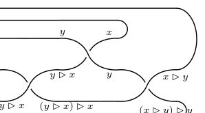
<figcaption class="paper-figure-caption"><b>Fig 5.</b> Figure 9: (a) coloring rule for the crossing. (b) Coloring of the figure-8 knot.</figcaption>
</figure>
</div>

<p><strong>Summary.</strong> The paper develops multi-entropy entanglement measures to probe the universal properties of topological order by calculating the topological partition function $Z(M)$. It establishes that this extraction is possible only if the manifold $M$ possesses a property called 'local achirality.' This framework successfully distinguishes between different types of topological phases and relates these quantum constraints to fundamental geometric invariants like the Pontryagin number in higher dimensions.</p>
<p><strong>Why it may be interesting.</strong> This work provides a powerful theoretical link between quantum entanglement measures derived from ground states and deep geometric invariants of spacetime manifolds, which is crucial for classifying exotic topological phases beyond standard symmetry protection.</p>
<details>
<summary>Detailed structure</summary>
<p><strong>Main problem.</strong> The central problem is determining if multi-entropy entanglement measures can extract all universal information about a topological order from the ground state wavefunction.</p>
<p><strong>Main result.</strong> Topological partition functions $Z(M)$ can be extracted universally if the underlying manifold $M$ satisfies a condition called 'local achirality.'</p>
<p><strong>Method.</strong> The authors use multi-entropy measures, which are multipartite entanglement generalizations, and relate their phase to the topological partition function $Z(M)$. They establish geometric constraints (like vanishing Pontryagin numbers) that characterize these locally-achiral manifolds.</p>
<p><strong>Model / system.</strong> The study concerns topologically ordered quantum phases of matter described by gapped ground states on lattices approximating various manifolds ($S^3$, 4-manifolds). Specific models include Quantum Double Theories $D(G_{p,q}, u)$ and Time-Reversal Symmetry Protected Topological Orders (T-SPT).</p>
<p><strong>Key observables.</strong> Multi-entropy measures $M(\psi)$, the topological partition function $Z(M)$, and geometric invariants like the Pontryagin number $\int_M p_1$.</p>
<p><strong>Important parameters / regimes.</strong> The dimension of the manifold ($d$), specific parameters defining anyon theories $(p, q, u)$, and the local achirality condition.</p>
<p><strong>Assumptions / limitations.</strong> It is assumed that multi-entropy measures are valid probes for universal information extraction, and in higher dimensions, local achirality implies vanishing Pontryagin numbers.</p>
<p><strong>Figures summary.</strong> Figures illustrate manifold constructions (e.g., $S^3$ decomposition), entanglement structures using 'gems,' and the relationship between topological invariants and geometric properties like the Pontryagin number.</p>
<p><strong>Paper structure.</strong> The paper progresses by first defining multi-entropy probes, establishing the condition of local achirality required to extract $Z(M)$, demonstrating this capability for 2+1D theories beyond modular data, and finally extending the analysis to higher dimensions (4D) by relating local achirality to vanishing Pontryagin numbers.</p>
</details>
<details>
<summary>Abstract</summary>
<p>We consider the problem of identifying a topological order based on bulk entanglement of the ground-state wavefunction. Previous work showed that some universal information can be extracted from multi-entropy measures, a class of multipartite entanglement measures obtained by applying permutation operators exchanging the degrees of freedom between different replicas of the wavefunction. It remains an open question to what extent such entanglement measures can be used to extract any universal information from the ground state. Here we show that the topological partition function $Z(M)$ of a manifold $M$ can be extracted provided that $M$ satisfies a topological condition which we term ``local achirality". We show that locally-achiral manifolds can be used to extract universal properties of 2+1d topological phases that go beyond the $S$ and $T$ matrices. As a first step towards classifying locally-achiral manifolds, we show that, in four dimensions, such manifolds have vanishing Pontryagin number. We relate this property to the existence of beyond-cohomology time-reversal symmetry protected topological order (T-SPT) in four dimensions. Finally, we present an entanglement measure that detects this nontrivial T-SPT.</p>
</details>
<p><sub><a href="#top">↑ back to top</a></sub></p>

<p><a id="paper-2606.18534"></a></p>
<h3 id="ground-and-excited-state-energies-extraction-via-trotterization-on-ibm-quantum-computers"><a href="http://arxiv.org/abs/2606.18534v1">Ground- and excited-state energies extraction via Trotterization on IBM quantum computers</a></h3>
<p><strong>Authors:</strong> Fernando Espinoza-Ortiz, Chungwei Lin, Chih-Chun Chien<br>
<strong>Type:</strong> both · <strong>Category:</strong> quantum information and computing · <strong>PDF:</strong> <a href="https://arxiv.org/pdf/2606.18534v1">https://arxiv.org/pdf/2606.18534v1</a><br>
<strong>Analysis basis:</strong> full PDF text, analyzed in chunks
<strong>Topic relevance:</strong> 🔥 <code>QC/QI experiment</code> <strong>4/5</strong> · <code>methods for driven-dissipative</code> <strong>1/5</strong> · <code>non-equilibrium dynamics</code> <strong>1/5</strong></p>
<div class="figure-strip-hint">↔ Scroll figures horizontally</div>
<div class="paper-figures-scroll">
<figure class="paper-figure-card">
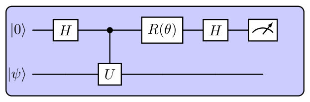
<figcaption class="paper-figure-caption"><b>Fig 1.</b> Figure 1. The Hadamard test for computing the real and imaginary parts of the time signal g(t) where R(θ) is the phase gate.</figcaption>
</figure>
<figure class="paper-figure-card">
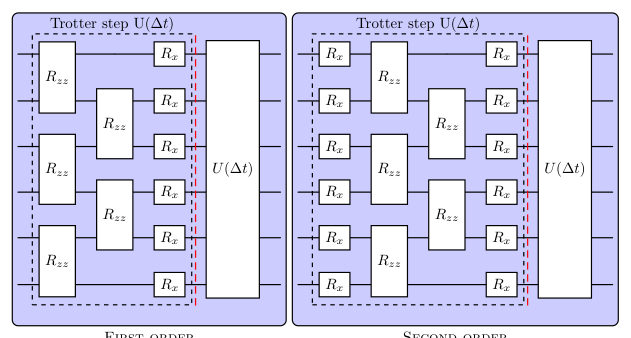
<figcaption class="paper-figure-caption"><b>Fig 2.</b> Figure 3. First and second order Trotterization circuits for a 6-spin TFIM with open boundary condition. Note that the rotation angle for the Rx gates are not the same between circuits. The Rx gates in the second-order Trotterization are θ = −∆t due to the symmetrization in Eq. (6), and the angle in the first-order Trotterization is θ = −2∆t. Meanwhile, the Rzz gates share the same angle θ = −2∆t following equations Eq. (5) and Eq (6).</figcaption>
</figure>
<figure class="paper-figure-card">
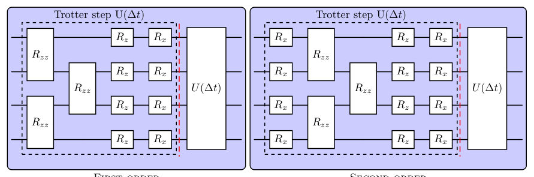
<figcaption class="paper-figure-caption"><b>Fig 3.</b> Figure 4. First and second-order Trotterization circuits for 4-spin TLFIM with open boundary condition. The Rx gates in the second-order Trotterization have angles θ = −∆t due to the symmetrization in Eq. (9), and the angle in the first-order Trotterization is θ = −2∆t. Akin to the TFIM, the Rzz and Rz gates share the same angle θ = −2∆t following Eq. (9).</figcaption>
</figure>
<figure class="paper-figure-card">
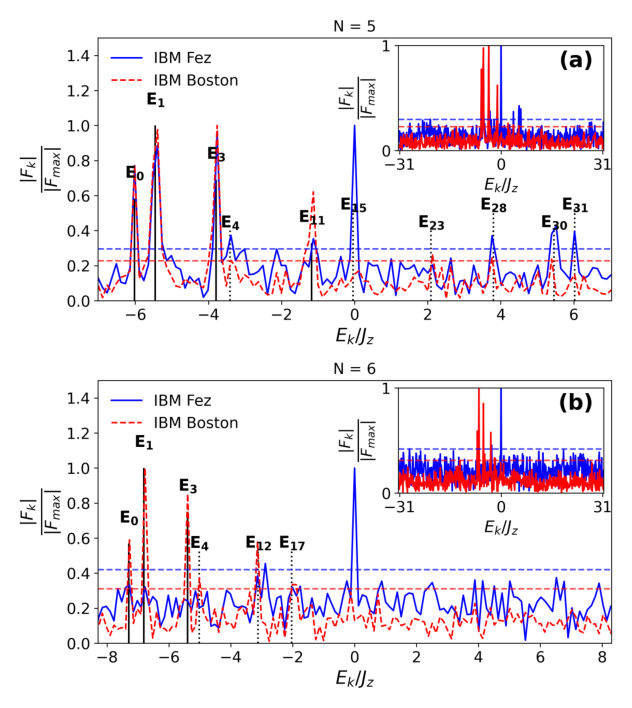
<figcaption class="paper-figure-caption"><b>Fig 4.</b> Figure 5. Fourier spectra of the TFIM with hx/Jz = 1, ∆t/t0 = 0.1, and τ/t0 = 50 for (a) N = 5 and (b) N = 6 spins from IBM Fez and Boston QPUs. The circuits were ran with 6500 shots per circuit to ensure signal resolutions. Each spin simulation consisted of 1002 total circuits; split evenly for extracting the real and imaginary components of the signal. With the guiding state |0⟩⊗N, for N = 5 (N = 6) we can resolve 9 (6) eigenenergies, indicated by the vertial dashed lines. The horizontal dashed lines indicate the background noise threshold according to Eq. (11).</figcaption>
</figure>
<figure class="paper-figure-card">
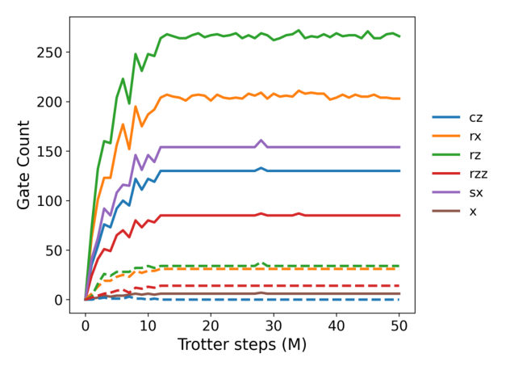
<figcaption class="paper-figure-caption"><b>Fig 5.</b> Figure 6. Gate counts versus Trotter steps M for the optimized circuits of the N = 3 TLFIM with second-order Trotterization and ∆t/t0 = 0.241, hx/Jz = 1, and hz/Jz = 0.1. The dashed lines are the gate counts only for the Trotterization of the time-evolution operator after transpilation on IBM Boston, and the solid lines are the gate counts for the controlled unitary for the H-test after transpilation on IBM Boston. For the N = 3 TLFIM, the circuit becomes of constant depth after BQSkit optimization.</figcaption>
</figure>
</div>

<p><strong>Summary.</strong> The paper presents a robust method to extract multiple eigenenergies of Ising-type models using noisy IBM quantum computers. It combines Trotterization with the Hadamard test and DFT analysis, achieving significant results by optimizing circuits toward constant depth. This advances the field's capability beyond simple ground-state finding towards full spectral characterization on NISQ devices.</p>
<p><strong>Why it may be interesting.</strong> This work is highly relevant as it pushes the boundary of quantum simulation techniques toward extracting detailed spectral information (multiple eigenvalues) rather than just the ground state, which is a major goal for simulating complex Hamiltonians in condensed matter physics.</p>
<details>
<summary>Detailed structure</summary>
<p><strong>Main problem.</strong> The core problem is extracting multiple ground- and excited-state energies of quantum many-body systems using noisy, near-term quantum hardware.</p>
<p><strong>Main result.</strong> The authors successfully demonstrated the reliable extraction of several low-lying eigenenergies for both TFIM and TLFIM on IBM quantum computers, comparing results across different hardware generations.</p>
<p><strong>Method.</strong> They employ the Hadamard test combined with Trotterized time-evolution operators, followed by a Discrete Fourier Transform (DFT) to map the time dynamics back to spectral energies.</p>
<p><strong>Model / system.</strong> The study focuses on simulating the Transverse Field Ising Model (TFIM) and its variant, the Transverse Longitudinal Field Ising Model (TLFIM). These models are implemented on IBM quantum processors using Trotterization circuits optimized for constant depth where possible.</p>
<p><strong>Key observables.</strong> Eigenenergies ($E_k$), spectral weights ($|c_k|^2$), and the time-dependent signal $g(t) = \langle\psi|e^{-i \hat{H}t}|\psi
angle$.</p>
<p><strong>Important parameters / regimes.</strong> The analysis involves balancing Trotter error ($\Delta t$) against circuit depth, with specific parameters like $\Delta t/t_0 = 0.1$ (TFIM) and $\Delta t/t_0 = 0.241$ (TLFIM) being crucial.</p>
<p><strong>Assumptions / limitations.</strong> The method assumes that the signal can be accurately reconstructed via DFT despite noise, and it relies on optimizing circuits to achieve constant depth where possible.</p>
<p><strong>Figures summary.</strong> Figures show Fourier spectra confirming resolved eigenenergies above a calculated noise threshold ($\eta_i$), and comparisons of measured population dynamics $|\langle 0^{\otimes N}|\psi(t)
angle|^2$ against high-accuracy classical Runge-Kutta simulations for both TFIM and TLFIM.</p>
<p><strong>Paper structure.</strong> The paper introduces the H-test/Trotterization framework, details optimizations like Constant-Depth Circuits (CDCs) for specific Hamiltonians (TFIM), applies this to both TFIM and TLFIM, and concludes by comparing results across different IBM hardware generations against classical benchmarks.</p>
</details>
<details>
<summary>Abstract</summary>
<p>We implement the Hadamard test with Trotterized time-evolution operators on IBM quantum computers to simultaneously extract ground- and excited-state energies of the transverse field Ising model (TFIM) and transverse longitudinal field Ising model (TLFIM). The Trotterization circuits for the TFIM admit constant-depth circuits (CDCs) for arbitrary time, allowing us to locate a large number of eigen-energies above the background noise for up to six spins. Via circuit synthesis we show that the three-spin TLFIM has constant-depth structure although it does not meet the known CDC criteria. The CDCs enable the extraction of the ground and first-excited state energies of the three-site TLFIM via its dynamics. We also address complications from the noisy background and discrete Fourier transform to enhance the reliability of the extraction process and compare the results from different generations of IBM hardware to highlight the improvement.</p>
</details>
<p><sub><a href="#top">↑ back to top</a></sub></p>

<p><a id="paper-2606.18605"></a></p>
<h3 id="the-quantum-advantage-resource-in-multimode-opa-light-identification-optimization-extraction"><a href="http://arxiv.org/abs/2606.18605v1">The quantum-advantage resource in multimode OPA light: Identification, optimization, extraction</a></h3>
<p><strong>Authors:</strong> Vitaly Kocharovsky, Kunwar Kalra<br>
<strong>Type:</strong> theory · <strong>Category:</strong> quantum information and computing · <strong>PDF:</strong> <a href="https://arxiv.org/pdf/2606.18605v1">https://arxiv.org/pdf/2606.18605v1</a><br>
<strong>Analysis basis:</strong> full PDF text, analyzed in chunks
<strong>Topic relevance:</strong> 🔥 <code>entanglement &amp; information structure</code> <strong>4/5</strong> · <code>Keldysh / 2PI / non-Gaussian methods</code> <strong>1/5</strong></p>
<div class="figure-strip-hint">↔ Scroll figures horizontally</div>
<div class="paper-figures-scroll">
<figure class="paper-figure-card">
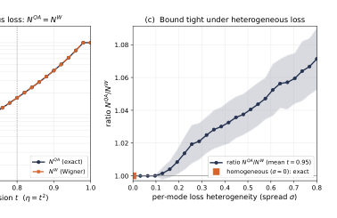
<figcaption class="paper-figure-caption"><b>Fig 1.</b> Fig. 1. Depletion of the quantum-advantage resource by pruning and photon loss: Normalized Wigner lower bound, Eq. (11), 𝑁𝑊, and exact value, Eq. (9), 𝑁𝑄𝐴, of the resource dimension as functions of (a) the number of modes 𝑀′ remaining after random one-at-a-time pruning 𝑀−𝑀′ modes and (b, c) field attenuation applied to all modes. (a) Random pruning: Mean ± standard deviation over 24 random interferometers and pruning orders. The easy-to-compute bound tracks the exact dimension along the whole trajectory, and both collapse by an order of magnitude at half budget (𝑀′/𝑀= 1/2). (b) Homogeneous loss, {𝑡𝑗= 𝑡}𝑀 𝑗=1: Normalized dimensions 𝑁𝑄𝐴and 𝑁𝑊coincide; the resource collapses by one order of...</figcaption>
</figure>
<figure class="paper-figure-card">
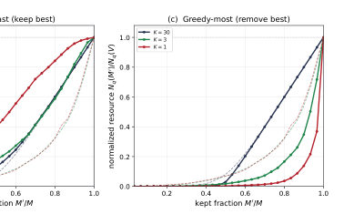
<figcaption class="paper-figure-caption"><b>Fig 2.</b> Fig. 2. Depletion of the quantum-advantage resource by tracing out (pruning) modes, 𝑀= 30, 𝑟= 1.0. Every panel plots the normalized resource 𝑁𝑄𝐴(𝑀′)/𝑁𝑞(𝑉)—the surviving fraction of the full resource—against the kept fraction 𝑀′/𝑀of modes. (a) Random pruning: The resource collapses roughly linearly to zero near 𝑀′/𝑀= 0.5, the asymptotics 𝑁𝑞∝𝑀′ −𝑀/2 is tied to the 𝑀-fold kernel of the classical part, dim ker𝑉𝑐= 𝑀. (b, c) Targeted one-at-a-time pruning by two extreme strategies, for 𝐾= 30, 3, 1 (colored; solid = greedy, dashed = random reference at the same 𝐾): greedy-least (b) removes the least-valuable mode each step (keeps the most resource), greedy-most (c) removes the most-valuable...</figcaption>
</figure>
<figure class="paper-figure-card">
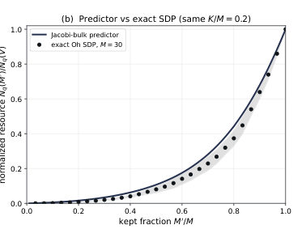
<figcaption class="paper-figure-caption"><b>Fig 3.</b> Fig. 3. Quantum-advantage resource under random pruning at large mode number, via the Jacobi-bulk predictor. (a) Resource dimension 𝑁𝑞(𝑀′) vs. the number of kept modes 𝑀′ for 𝑀= 3000, 𝐾= 600 squeezed at 𝑟= 1 (that is, 𝑁𝑞(𝑉) = 𝐾sinh2 𝑟= 828.7): The predictor (curve) and direct Monte-Carlo samples (drawing the singular values of a Haar block, no SDP convex optimization) agree, with the resource falling to 89 (11%) by half budget. This is a regime where the exact convex optimization is intractable. (b) At the same ratio 𝐾/𝑀= 0.2 the predictor matches the exact SDP convex optimization at a tractable size (𝑀= 30), validating it. The mean-field predictor slightly overestimates at intermediate...</figcaption>
</figure>
<figure class="paper-figure-card">

<figcaption class="paper-figure-caption"><b>Fig 4.</b> Fig. 4. Depletion of the quantum-advantage resource by coarse-grained binning of 𝑀= 30 squeezed entangled lossy modes. (a) Distribution over 560 random states and binnings (bin count ¯𝑀drawn from [6, 18]): The median surviving fraction is 0.036 and no binning exceeds 1 (monotonicity, Eq. (21)). The loss is severe and worsens with 𝑀(median ∼0.14 at 𝑀∼8 falling to 0.036 at 𝑀= 30). (b) Surviving fraction at two fixed bin counts, ¯𝑀= 10 (bins of 3) vs. ¯𝑀= 15 (bins of 2), over the same ensemble (box = quartiles, dots = individual binnings): The coarser count strands more resource, leaving a median of only ≈0.016 against ≈0.105 for the finer one – isolating the effect of binning granularity...</figcaption>
</figure>
<figure class="paper-figure-card">

<figcaption class="paper-figure-caption"><b>Fig 5.</b> Fig. 5. Commonly used Bloch–Messiah algorithm vs. resource extraction algorithm B and other algorithms for a heterogeneous-loss ensemble (per-mode power transmission 𝜂= 𝑡2 ∈[0.1, 0.5]; 𝑀= 30, 𝑛= 24 states). (a) Ensemble-averaged recovered fraction 𝑁𝑞(kept)/𝑁𝑞(𝑉) vs. kept fraction 𝑀′/𝑀. The resource extraction algorithm B is the preferable unique passive procedure for which the per-mode rank statistic sinh2 ˜𝑟𝑗adds up exactly to the total resource, Í 𝑗sinh2 ˜𝑟𝑗= 𝑁𝑞(𝑉), Eq. (25). (b) 𝑁𝐵𝑀 𝑞 (𝑉)/𝑁𝑞(𝑉) vs. mean transmission. The Bloch–Messiah algorithm severely overestimates the true resource.</figcaption>
</figure>
</div>

<p><strong>Summary.</strong> This work introduces a novel 'quantum-advantage resource' measure for multimode Gaussian light, quantifying its inherent quantum complexity using advanced convex optimization techniques. By analyzing pulsed OPAs, the authors demonstrate that this resource can be maximized and extracted, providing a critical theoretical tool for realizing scalable photonic quantum computing beyond simple entanglement measures.</p>
<p><strong>Why it may be interesting.</strong> It provides a rigorous mathematical framework ($ ext{#P}$-hard complexity) to quantify the non-classical resources in continuous variable systems, offering a superior metric over standard entanglement measures for assessing true computational advantage.</p>
<details>
<summary>Detailed structure</summary>
<p><strong>Main problem.</strong> To introduce and provide a universal quantitative measure for the 'quantum-advantage resource' contained within mixed multimode Gaussian states, distinguishing it from classical correlations.</p>
<p><strong>Main result.</strong> The proposed quantum complexity resource dimension ($N_{QA}$) is shown to be a more realistic metric than previous measures like Bloch–Messiah supermodes, and this resource can be engineered in pulsed OPAs for photonic quantum computing.</p>
<p><strong>Method.</strong> The analysis uses convex optimization techniques applied to the quadrature covariance matrix, relating the resource measure to the $\text{\#P}$-hard complexity of joint photon number probability distributions via the Hafnian Master Theorem.</p>
<p><strong>Model / system.</strong> The system is modeled using multimode Gaussian states generated by pulsed Optical Parametric Amplifiers (OPAs). The state is characterized entirely by its quadrature covariance matrix, $V$.</p>
<p><strong>Key observables.</strong> Quantum-advantage resource dimension ($N_{QA}$), the quantum part of the covariance matrix ($V_q$), and the mean photon number in the quantum part ($\langle n_S 
angle$).</p>
<p><strong>Important parameters / regimes.</strong> The squeezing parameters ($\tilde{r}_j$) derived from $V_q$, and the number of modes ($M$) which can reach thousands.</p>
<p><strong>Assumptions / limitations.</strong> The analysis is primarily restricted to Gaussian states, although it aims to guide applications toward non-Gaussian regimes. It assumes that the resource measure depends only on the exponential factor of complexity.</p>
<p><strong>Figures summary.</strong> Figures compare the exact quantum advantage resource ($N_{QA}$) against the Wigner quasi-probability distribution bound ($N_W$), showing excellent agreement, and illustrate how mode pruning severely depletes this resource.</p>
<p><strong>Paper structure.</strong> The paper develops the theoretical framework by defining the resource via convex optimization (Oh decomposition), comparing it to older metrics (BM supermodes), deriving bounds using Wigner functions, analyzing resource depletion under loss/pruning, and finally applying these concepts to pulsed OPA sources for quantum computation.</p>
</details>
<details>
<summary>Abstract</summary>
<p>We introduce the notion and reveal remarkable properties of quantum complexity resource contained in a mixed multimode Gaussian state and providing universal quantitative characterization of its quantum advantage. The notion is based on convex optimization, multimode photon number statistics, Hafnian Master Theorem, and #P-hard complexity. We consider pulsed OPAs targeting maximal quantum complexity resource and thousands of multipartite-entangled squeezed modes of output light via nonlinear, spatio-temporally nonadiabatic generation inside OPA and optimized extraction out of OPA. We show that such figure of merit is more realistic than Bloch--Messiah supermodes and guides to multimode OPAs opening new paths to important applications in quantum information science such as generation of 3D cluster states for one-way photonic quantum computing and demonstration of quantum advantage.</p>
</details>
<p><sub><a href="#top">↑ back to top</a></sub></p>

<p><a id="paper-2606.19219"></a></p>
<h3 id="spontaneous-parametric-down-conversion-pumped-by-spatiotemporal-structured-light"><a href="http://arxiv.org/abs/2606.19219v1">Spontaneous parametric down-conversion pumped by spatiotemporal structured light</a></h3>
<p><strong>Authors:</strong> Lukas Montenegro, Rafael F. Barros<br>
<strong>Type:</strong> theory · <strong>Category:</strong> other · <strong>PDF:</strong> <a href="https://arxiv.org/pdf/2606.19219v1">https://arxiv.org/pdf/2606.19219v1</a><br>
<strong>Analysis basis:</strong> full PDF text, analyzed in chunks
<strong>Topic relevance:</strong> 🔥 <code>interference shaping light</code> <strong>4/5</strong></p>
<div class="figure-strip-hint">↔ Scroll figures horizontally</div>
<div class="paper-figures-scroll">
<figure class="paper-figure-card">

<figcaption class="paper-figure-caption"><b>Fig 1.</b> FIG. 1. a) Conceptual image of SPDC photons produced by pumping a nonlinear crystal with a spatiotemporally struc- tured pump beam. The pump field shown is composed of ultrafast pulse shapes attached to superpositions of radial Laguerre-Gaussian spatial modes (lp = 0), as illustrated in b). The signal and idler photons are spatially projected onto counter-rotating OAM modes with ls = ℓand li = −ℓ.</figcaption>
</figure>
<figure class="paper-figure-card">

<figcaption class="paper-figure-caption"><b>Fig 2.</b> FIG. 3. Fidelity of the effective nonlinear susceptibility to Hermite-Gaussian targets obtained by a genetic optimization of the pump spatial structure with varying ℓ. The fidelity is measured as the Euclidean distance to the target nonlinear coefficient.</figcaption>
</figure>
<figure class="paper-figure-card">

<figcaption class="paper-figure-caption"><b>Fig 3.</b> FIG. 2. Hermite-Gaussian nonlinear coefficients obtained L = 15 mm, ℓ= 9, δω∆βL = 16, and zR/L = 0.2. The first column shows the coefficients ¯cm optimized with a genetic al- gorithm to minimize the Euclidean distance ||dℓ(z)−dT (z)|| to Hermite-Gaussian targets of a. zeroth, b. first and c. second order. The target nonlinear coefficients and the correspond- ing optimization results are shown on the second column.</figcaption>
</figure>
<figure class="paper-figure-card">

<figcaption class="paper-figure-caption"><b>Fig 4.</b> FIG. 4. Hermite-Gaussian joint spectral amplitudes in the rotated basis and their respective spatiotemporal pumps. We show the HG00 state in a./g., HG01 in b./h., HG10 in c./i., HG02 in d./j., HG11 in e./k., and HG20 in f./l.. Here ∆ωs/i = ωs/i−ω0 s/i, ω0 being the central, phase-matched frequency corresponding to the wavelength of 1560 nm. The nonlinear medium considered is a type-II KTiOPO4 crystal, and all other parameters are the same as in Fig. 2.</figcaption>
</figure>
<figure class="paper-figure-card">

<figcaption class="paper-figure-caption"><b>Fig 5.</b> FIG. 5. Joint spectral amplitudes and their respective spatiotemporal pump structures in the Laguerre-Gauss basis. These states represent superpositions of the states created in 4 and are all maximally entangled. Figures a. and g. represent the gaussian mode; figures b. and h. and c. and i. represent modes LG+1 0 and LG−1 0 , respectively, while figures d. and j., e. and k. and f. and l. represent the modes of order two, LG+2 0 , LG0 1 and LG−2 0 .</figcaption>
</figure>
</div>

<p><strong>Summary.</strong> The paper presents a method to precisely control the spectral correlations of entangled photon pairs generated via SPDC using structured light pumps. By exploiting the Gouy phase mismatch, the authors show that structuring the pump in both space and spectrum allows for 'field-programmable' generation of complex quantum states. This offers a powerful alternative to traditional crystal engineering for advanced quantum source development.</p>
<p><strong>Why it may be interesting.</strong> This work is highly relevant to quantum optics, specifically in the area of photon source engineering. The concept of 'field-programmable' sources that bypass complex crystal fabrication techniques by manipulating the pump beam is a major theoretical advance for generating high-dimensional entangled states.</p>
<details>
<summary>Detailed structure</summary>
<p><strong>Main problem.</strong> The research aims to achieve all-optical control over the spectral correlations of photon pairs generated via Spontaneous Parametric Down-Conversion (SPDC). This is accomplished by structuring the pump beam in both spatial and spectral domains.</p>
<p><strong>Main result.</strong> By utilizing Gouy phase matching with spatiotemporally structured light, the authors demonstrate full control over biphoton spectral correlations, enabling the generation of complex quantum states inaccessible through traditional crystal engineering methods.</p>
<p><strong>Method.</strong> The method involves modeling SPDC using mode expansions (e.g., Hermite-Gaussian basis) and deriving the joint spectral amplitude (JSA) dependence on the pump field's spatiotemporal structure via the Gouy phase mismatch.</p>
<p><strong>Model / system.</strong> The physical system is SPDC in a nonlinear medium, modeled by an interaction Hamiltonian. The control mechanism relies on structuring the pump beam using its spatial and temporal wavepacket properties to dictate the effective phase-matching function.</p>
<p><strong>Key observables.</strong> Mode-dependent joint spectral amplitude (mJSA), fidelity of the effective nonlinear susceptibility ($\chi_{	ext{eff}}$) matching target Hermite-Gaussian structures, and spectral purity ($P$).</p>
<p><strong>Important parameters / regimes.</strong> The Gouy phase mismatch term $\Delta \phi_G(z)$ is crucial; control is achieved by structuring the pump field in space (spatial modes) and spectrum (temporal wavepackets).</p>
<p><strong>Assumptions / limitations.</strong> Approximations include using the standard SPDC regime (low pair generation probability) and assuming linear dispersion.</p>
<p><strong>Figures summary.</strong> Figures illustrate conceptual setups with structured pumps, optimization results showing high fidelity of $\chi_{	ext{eff}}$ matching HG targets, and examples of generated JSAs using Laguerre-Gaussian modes in a rotated spectral basis.</p>
<p><strong>Paper structure.</strong> The paper develops the theoretical framework by relating the mJSA to the pump field structure via Gouy phase matching. It then demonstrates this control capability by generating specific quantum states (separable vs. entangled) and compares it favorably against previous methods like those using Aperiodically Poled Crystals.</p>
</details>
<details>
<summary>Abstract</summary>
<p>Here we investigate the all-optical control of spectral correlations in spontaneous parametric down-conversion. We show that when photon pairs are projected onto high-order spatial modes, the spatial structure of the pump field defines the phase-matching function of the nonlinear interaction. Thus, by structuring the pump field in both space and spectrum, the biphoton spectral correlations are fully controlled.Considering a standard periodically-poled crystal as the nonlinear medium, we show that the Gouy phase matching method proposed here can generate both spectrally uncorrelated and high-dimensional spectrally entangled photon pairs, similarly to what is achieved with aperiodically-poled crystals. Furthermore, we show that our method can generate a wider class of quantum states if the pump field is a spatiotemporal wavepacket, that is, if its spatial and spectral structures are correlated.</p>
</details>
<p><sub><a href="#top">↑ back to top</a></sub></p>

<p><a id="paper-2606.18756"></a></p>
<h3 id="universal-photon-blockade-via-two-photon-light-matter-interaction-at-chiral-exceptional-points"><a href="http://arxiv.org/abs/2606.18756v1">Universal photon blockade via two-photon light-matter interaction at chiral exceptional points</a></h3>
<p><strong>Authors:</strong> Hai-Tao Dong, Meng-Long Song, Si-Yu Zhang, Xue-Ke Song, Liu Ye, Dong Wang<br>
<strong>Type:</strong> theory · <strong>Category:</strong> other · <strong>PDF:</strong> <a href="https://arxiv.org/pdf/2606.18756v1">https://arxiv.org/pdf/2606.18756v1</a><br>
<strong>Analysis basis:</strong> full PDF text, analyzed in chunks
<strong>Topic relevance:</strong> <code>Tavis-Cummings &amp; cavity-many-emitter</code> <strong>3/5</strong> · <code>correlated cavity matter</code> <strong>3/5</strong> · <code>driven-dissipative phase transition</code> <strong>3/5</strong> · <code>interference shaping light</code> <strong>3/5</strong> · <code>analog quantum simulation</code> <strong>2/5</strong> · <code>correlated / nonlocal dissipation</code> <strong>2/5</strong> · <code>methods for driven-dissipative</code> <strong>2/5</strong> · <code>non-equilibrium universality</code> <strong>2/5</strong> · <code>Keldysh / 2PI / non-Gaussian methods</code> <strong>1/5</strong> · <code>entanglement &amp; information structure</code> <strong>1/5</strong> · <code>non-equilibrium dynamics</code> <strong>1/5</strong></p>
<div class="figure-strip-hint">↔ Scroll figures horizontally</div>
<div class="paper-figures-scroll">
<figure class="paper-figure-card">

<figcaption class="paper-figure-caption"><b>Fig 1.</b> FIG. 1. Schematics of the cavity QED systems and the equivalent models. (a) A standard resonator supporting degenerate CW and CCW modes. A two-level atom couples to both modes with equal strength g. κ denotes the cavity-waveguide decay rate. (b) A mirror on the waveguide introduces strong unidirectional coupling from the CCW to the CW mode, driving the system to CEPs. (c) The EP system is unfolded via mirror symmetry into a cascaded model with a spatial separation L. Ωc (Ωa) represents the driving strength of the pump field, and ωd (ωL) represents the driving frequency.</figcaption>
</figure>
<figure class="paper-figure-card">

<figcaption class="paper-figure-caption"><b>Fig 2.</b> FIG. 3. Density plots of the steady-state equal-time second-order correlation functions versus the nonlinear atom-cavity coupling strength g/κ and the mirror reflectivity r under cavity driving. (a) The correlation function in the left cavity, g(2) L (0). (b) The corre- lation function in the right cavity, g(2) R (0). The system parameters are chosen as γ/κ = 1, Ωc/κ = 0.01, ∆a = 0, and φ = 0 and the white dashed line in the figure corresponds to the relation: g/κ = |2r −1| p</figcaption>
</figure>
<figure class="paper-figure-card">

<figcaption class="paper-figure-caption"><b>Fig 3.</b> FIG. 2. (a) Energy spectrum of the two-photon two-mode JC model. (b) Transition pathways of the cavity drive in the quantum interference model. In the panels, J = −iκ|r|eiφ. (c) Transition pathways of the atom drive in the quantum interference model.</figcaption>
</figure>
<figure class="paper-figure-card">

<figcaption class="paper-figure-caption"><b>Fig 4.</b> FIG. 4. (a)-(c) g(2) s (0) as a function of g in the resonant case ∆c = 0 for Ωc/κ = 0.01, γ/κ = 1 and (a) r = 1,(b) r = 0.33 and (c) r = 0.25 . (d)-(f) g(2) s (0) and nR as a function of φ in the resonant case ∆c = 0 for Ωc/κ = 0.01,γ/κ = 1 and (d) r = 1, g/κ = 0.354,(e) r = 0.33, g/κ = 0.158 and (f) r = 0.25, g/κ = 0.267. (g)-(i) g(2) s (0) and nR as a function of ∆c for Ωc/κ = 0.01,γ/κ = 1, φ = 0 and (g) r = 1, g/κ = 0.354, (h) r = 0.33, g/κ = 0.158 and (i) r = 0.25, g/κ = 0.267. In the panels, the subscripts ”n” and ”a” denote numerical and analytical solutions, respectively.</figcaption>
</figure>
<figure class="paper-figure-card">

<figcaption class="paper-figure-caption"><b>Fig 5.</b> FIG. 5. (a) Plots of the g(2) s (0)(s = L, R) and nL as a function of φ with system parameters r = 1, γ/κ = 1, ∆c/κ = 0.866, g/κ = 1. (b) Plots of the g(2) s (0)(s = L, R) and nL as a function of ∆c with system parameters r = 1, φ = 0 , γ/κ = 1, g/κ = 1. (c) Plots of the g(2) s (0)(s = L, R) and nL as a function of ∆c with system parameters r = 1, φ = 0, γ/κ = 1, ∆c/κ = 0.866. In the panels, the subscripts ”n” and ”a” denote numerical and analytical solutions, respectively.</figcaption>
</figure>
</div>

<p><strong>Summary.</strong> The paper theoretically investigates how chiral exceptional points in an optical microcavity can be exploited to achieve universal photon blockade. By analyzing the system's nonreciprocal dynamics, the authors demonstrate that one direction of light propagation exhibits strong anti-bunching (PB), while the other shows different statistics. This provides a pathway for designing highly directional quantum sources.</p>
<p><strong>Why it may be interesting.</strong> This work is highly relevant to AMO physics and quantum optics as it explores non-Hermitian effects (CEPs) to engineer fundamental quantum phenomena like single-photon emission with unprecedented directional control, moving beyond standard cavity QED setups.</p>
<details>
<summary>Detailed structure</summary>
<p><strong>Main problem.</strong> The study investigates achieving universal photon blockade (PB) using two-photon light-matter interactions within a microcavity system exhibiting chiral exceptional points (CEPs). The goal is to build multiplexing quantum sources with nonreciprocal photon statistics.</p>
<p><strong>Main result.</strong> The presence of CEPs causes a stark contrast in photon statistics between the two counter-propagating modes: one mode exhibits strong PB ($g^{(2)} 	o 0$), while the other shows Poissonian or super-Poissonian distribution, enabling directional control.</p>
<p><strong>Method.</strong> Theoretical analysis using the extended cascade quantum master equation and deriving equations of motion for probability amplitudes. Photon statistics are diagnosed via equal-time second-order correlation functions, $g^{(2)}(0)$.</p>
<p><strong>Model / system.</strong> The system is an optical microcavity coupled to a quantum emitter (QE), modeled by a two-photon two-mode JC Hamiltonian ($H_{JC}$). The dynamics are governed by the master equation incorporating cavity and atomic decay rates.</p>
<p><strong>Key observables.</strong> Second-order correlation functions ($g^{(2)}_L(0)$ and $g^{(2)}_R(0)$), mean photon numbers ($n_L, n_R$), and probability amplitudes of Fock states.</p>
<p><strong>Important parameters / regimes.</strong> Coupling strength ($g/\kappa$), detuning ($\Delta_c/\kappa$), phase ($\phi$), and cavity/mirror reflectivity ($r$).</p>
<p><strong>Assumptions / limitations.</strong> The analysis relies on the weak-driving regime approximation in some sections, and the system dynamics are modeled using a master equation approach.</p>
<p><strong>Figures summary.</strong> Figures illustrate $g^{(2)}(0)$ dependence on parameters like coupling strength, phase, and detuning. Key findings show PB ($g^{(2)} 	o 0$) appearing selectively in one mode (e.g., the right cavity) under specific parameter settings ($\phi=0$ or $\Delta_c=0$).</p>
<p><strong>Paper structure.</strong> The paper develops by first establishing the theoretical framework using a two-photon JC model and master equation dynamics. It then analyzes the system's steady-state behavior, focusing on how CEPs induce directional differences in photon statistics (PB vs. bunching) under varying driving conditions (resonant vs. detuned).</p>
</details>
<details>
<summary>Abstract</summary>
<p>The photon blockade (PB) effect is a hallmark non-classical phenomenon in quantum optics and finds important applications for building quantum sources, while the control of PB by the non-Hermitian exceptional points remains largely unexplored. In this work, we theoretically investigate universal photon blockade in a microcavity harboring chiral exceptional points (CEPs) for building multiplexing quantum sources with nonreciprocal photon statistics. The results reveal that the presence of the CEPs leads to a stark contrast in the photon statistics of two whispering-gallery modes with opposite propagating directions. That is, one mode exhibits a strong PB effect while the other displays either sub-Poissonian or super-Poissonian distribution. Our findings thus may pave the way for advanced applications of photon blockade, and provide a theoretical foundation for the selective generation of single-photon and two-photon emission</p>
</details>
<p><sub><a href="#top">↑ back to top</a></sub></p>

<p><a id="paper-2606.19033"></a></p>
<h3 id="contextuality-as-a-diagnostic-of-translation-symmetry-breaking-in-translation-invariant-1d-hamiltonians"><a href="http://arxiv.org/abs/2606.19033v1">Contextuality as a Diagnostic of Translation-Symmetry Breaking in Translation-Invariant 1D Hamiltonians</a></h3>
<p><strong>Authors:</strong> Xiao Zeng, Kaiyan Yang, Lingxia Zhang, Zizhu Wang<br>
<strong>Type:</strong> theory · <strong>Category:</strong> statistical mechanics · <strong>PDF:</strong> <a href="https://arxiv.org/pdf/2606.19033v1">https://arxiv.org/pdf/2606.19033v1</a><br>
<strong>Analysis basis:</strong> full PDF text, analyzed in chunks
<strong>Topic relevance:</strong> <code>analog quantum simulation</code> <strong>3/5</strong> · <code>entanglement &amp; information structure</code> <strong>3/5</strong> · <code>methods for driven-dissipative</code> <strong>3/5</strong> · <code>Frenkel-Kontorova</code> <strong>2/5</strong> · <code>Keldysh / 2PI / non-Gaussian methods</code> <strong>2/5</strong> · <code>quantum measurements</code> <strong>2/5</strong> · <code>correlated / nonlocal dissipation</code> <strong>1/5</strong> · <code>correlated cavity matter</code> <strong>1/5</strong> · <code>driven-dissipative phase transition</code> <strong>1/5</strong> · <code>exotic spin models in light-matter</code> <strong>1/5</strong> · <code>non-equilibrium dynamics</code> <strong>1/5</strong> · <code>non-equilibrium universality</code> <strong>1/5</strong></p>
<div class="figure-strip-hint">↔ Scroll figures horizontally</div>
<div class="paper-figures-scroll">
<figure class="paper-figure-card">

<figcaption class="paper-figure-caption"><b>Fig 1.</b> FIG. 1: Schematic classical-to-quantum symmetry selection along a parameterized Hamiltonian family H(θ). We assume H(θ0) saturates the classical bound while H(θ1) reaches the maximal quantum violation. As θ is tuned from θ0 to θ1, the ground-state energy density e(θ) decreases and contextuality appears. At θ0, the classical-saturating Hamiltonian has a ground space supporting multiple distinct commensurate periods. For θ &gt; θ0, this period degeneracy is lifted and the ground state becomes strictly pQ-periodic with pQ &gt; 1, signaling spontaneous breaking of one-site translation symmetry.</figcaption>
</figure>
<figure class="paper-figure-card">

<figcaption class="paper-figure-caption"><b>Fig 2.</b> FIG. 3: The diagram representation of the correlation function 〈Oi αO j β〉. l, r are the left and right fixed points of</figcaption>
</figure>
<figure class="paper-figure-card">

<figcaption class="paper-figure-caption"><b>Fig 3.</b> FIG. 2: A diagram representation of uMPS.</figcaption>
</figure>
<figure class="paper-figure-card">

<figcaption class="paper-figure-caption"><b>Fig 4.</b> FIG. 4: Structure of the ground state |Ψ(A)〉. |Ψ(A)〉is the symmetrization of the state |ψ3〉⊗∞, and |ψ3〉is a state that is a product of a two-partite entangled state and a single-partite state. The yellow box shows the symmetrized two-site reduced density matrix.</figcaption>
</figure>
<figure class="paper-figure-card">

<figcaption class="paper-figure-caption"><b>Fig 5.</b> FIG. 5: The energy densities of Eq. (18) (left-hand side with observables Eq. (11)) computed using DMRG with OBC. Note that DMRG sometimes falls into local minima for this model, and the final energy seems to depend on the initial tensor. Each point in this figure are the lowest energy from 100 runs of DMRG for each n ∈{3,...,100}.</figcaption>
</figure>
</div>

<p><strong>Summary.</strong> This work establishes that contextuality serves as a quantitative diagnostic for detecting spontaneous translation-symmetry breaking in 1D quantum systems. By analyzing how the maximal violation of contextuality witnesses forces the ground state into a unique periodic structure, it connects fundamental concepts from quantum information theory to condensed matter physics principles like commensurate order.</p>
<p><strong>Why it may be interesting.</strong> It provides a powerful, measurable quantum correlation diagnostic—contextuality—that directly maps onto fundamental concepts in condensed matter physics like spontaneous symmetry breaking and emergent periodicity.</p>
<details>
<summary>Detailed structure</summary>
<p><strong>Main problem.</strong> The paper investigates contextuality as a diagnostic tool for detecting spontaneous breaking of translation symmetry in quantum systems described by translation-invariant Hamiltonians.</p>
<p><strong>Main result.</strong> Maximal quantum violation of contextuality witnesses coincides with the spontaneous breaking of one-site translation symmetry, forcing the ground state into a unique, strictly periodic structure ($p>1$).</p>
<p><strong>Method.</strong> The analysis uses advanced mathematical tools including Semidefinite Programming (SDP) hierarchies (NPA), Matrix Product States (MPS), and variational minimization to derive lower bounds for quantum correlations.</p>
<p><strong>Model / system.</strong> The study focuses on infinite one-dimensional translation-invariant chains governed by local Hamiltonians, analyzed using contextuality witnesses derived from energy density measurements.</p>
<p><strong>Key observables.</strong> Contextuality violation ($\langle E 
angle_{	ext{TI}} < L$), the emergent periodicity ($p_Q > 1$) of the ground state, and the associated energy density $e(	heta)$.</p>
<p><strong>Important parameters / regimes.</strong> The interpolation parameter $   heta$ controls the Hamiltonian family between classical-bound and quantum-optimal regimes; system size reduction to finite rings is also key.</p>
<p><strong>Assumptions / limitations.</strong> Approximations include using LTI states in SDP relaxations, and assuming that the contextuality witness can be mapped onto a local energy density observable.</p>
<p><strong>Figures summary.</strong> Figures schematically illustrate the transition from multiple degenerate periods at the classical bound to a single quantum-selected period upon increasing contextuality violation. Finite-size scaling plots show convergence of energy densities.</p>
<p><strong>Paper structure.</strong> The paper systematically develops the connection between contextuality, symmetry breaking, and periodicity by first establishing bounds using SDPs (NPA hierarchy), then demonstrating this via MPS/variational methods, and finally showing the physical implication through period selection upon tuning Hamiltonian parameters.</p>
</details>
<details>
<summary>Abstract</summary>
<p>Bell- and contextuality-type inequalities have become practical probes of many-body quantum correlations, often involving only few-body correlators and quantities with a direct Hamiltonian interpretation such as an energy density. Here we show that, in infinite one-dimensional translation-invariant chains, contextuality can acquire a genuinely thermodynamic meaning: within the witness families studied, the maximal quantum violation coincides with spontaneous breaking of one-site translation symmetry, producing strictly $p$-periodic ground states with $p>1$. Along natural continuous interpolations between classical-bound and quantum-optimal Hamiltonians, the classical bound marks a symmetry-breaking point where competing classical periodicities are lifted in favor of a unique quantum-selected period. At the quantum optimum, the studied families admit exact finite-size reductions: a translation-invariant contextuality witness induces a $p$-site periodic-boundary-condition inequality with identical classical and quantum bounds (hence no loss under reduction), and in several cases the resulting finite inequalities are tight. This reduction turns an infinite-chain contextuality certification into a compact, hardware-testable benchmark on a small ring, requiring only local energy measurements. We establish the mechanism analytically in representative two- and three-body witness models and corroborate it more broadly using a translation-invariant adaptation of semidefinite-program hierarchies together with variational matrix-product-state algorithms.</p>
</details>
<p><sub><a href="#top">↑ back to top</a></sub></p>

<p><a id="paper-2606.19085"></a></p>
<h3 id="quantum-pump-depletion-and-multicomponent-schrodinger-cat-like-states-in-doubly-pumped-intraresonance-kerr-microresonators"><a href="http://arxiv.org/abs/2606.19085v1">Quantum Pump Depletion and Multicomponent Schrödinger-Cat-Like States in Doubly Pumped Intraresonance Kerr Microresonators</a></h3>
<p><strong>Authors:</strong> Ranjit Singh, Alexander E. Teretenkov<br>
<strong>Type:</strong> theory · <strong>Category:</strong> quantum information and computing · <strong>PDF:</strong> <a href="https://arxiv.org/pdf/2606.19085v1">https://arxiv.org/pdf/2606.19085v1</a><br>
<strong>Analysis basis:</strong> full PDF text, analyzed in chunks
<strong>Topic relevance:</strong> <code>correlated cavity matter</code> <strong>3/5</strong> · <code>driven-dissipative phase transition</code> <strong>3/5</strong> · <code>entanglement &amp; information structure</code> <strong>3/5</strong> · <code>methods for driven-dissipative</code> <strong>2/5</strong> · <code>non-equilibrium dynamics</code> <strong>2/5</strong> · <code>non-equilibrium universality</code> <strong>2/5</strong> · <code>Keldysh / 2PI / non-Gaussian methods</code> <strong>1/5</strong> · <code>analog quantum simulation</code> <strong>1/5</strong> · <code>correlated / nonlocal dissipation</code> <strong>1/5</strong> · <code>interference shaping light</code> <strong>1/5</strong></p>
<div class="figure-strip-hint">↔ Scroll figures horizontally</div>
<div class="paper-figures-scroll">
<figure class="paper-figure-card">

<figcaption class="paper-figure-caption"><b>Fig 1.</b> FIG. 1. Mean photon numbers ⟨n0⟩, ⟨n1⟩and quadrature variances ∆X2 0, ∆P 2 0 , ∆X2 1, and ∆P 2 1 as functions of nor- malized interaction length τ = g2t. The dashed vertical line indicates τmax, where the generated-mode population ⟨n1⟩is maximal and the pump population ⟨n0⟩is near its minimum.</figcaption>
</figure>
<figure class="paper-figure-card">

<figcaption class="paper-figure-caption"><b>Fig 2.</b> FIG. 2. Photon-number distribution P0(n; τmax) of the pump mode a0. The broadening and deformation relative to the initial coherent-state distribution arise from quantum pump depletion and entanglement between the pump and generated sectors.</figcaption>
</figure>
<figure class="paper-figure-card">

<figcaption class="paper-figure-caption"><b>Fig 3.</b> Figure 1 shows the transfer of population from the pump sector to the generated modes. Because the pump modes a0 and a3 are treated quantum mechanically, this transfer represents genuine quantum pump depletion rather than an externally prescribed classical drive. The quadrature variances reveal weak but measurable squeezing of the pump modes. For the representative pump mode a0, the minimum variance is</figcaption>
</figure>
<figure class="paper-figure-card">

<figcaption class="paper-figure-caption"><b>Fig 4.</b> FIG. 3. Photon-number distribution P1(n; τmax) of the generated mode a1. The strongly non-Poissonian statistics demonstrate that the generated field cannot be described as a coherent state and instead reflects the underlying quantum photon-conversion dynamics.</figcaption>
</figure>
<figure class="paper-figure-card">

<figcaption class="paper-figure-caption"><b>Fig 5.</b> FIG. 5. Wigner function W1(x1, p1; τmax) of the gener- ated mode a1 at τ = τmax for the reduced photon-conversion Hamiltonian. Pronounced interference fringes and negative regions reveal strong nonclassicality and indicate the forma- tion of a Schr¨odinger-cat-like state. The strongest Wigner negativity occurs near τ = τmax, which coincides with the maximum population of a1 and strong depletion of the pump mode a0.</figcaption>
</figure>
</div>

<p><strong>Summary.</strong> The paper analyzes how doubly pumped Kerr microresonators generate complex, non-Gaussian Schrödinger-cat-like states by treating pump depletion quantum mechanically. By comparing the full dynamics to simplified models, the authors demonstrate that genuine quantum back-action is crucial for maintaining the fragile interference patterns (Wigner negativity) associated with these highly nonclassical resources.</p>
<p><strong>Why it may be interesting.</strong> This work directly addresses generating nonclassical states—specifically cat-like structures—using cavity nonlinearities, which is a central theme in continuous-variable quantum information processing and quantum optics.</p>
<details>
<summary>Detailed structure</summary>
<p><strong>Main problem.</strong> The study investigates quantum pump depletion and the generation of non-Gaussian, cat-like states in Kerr microresonators.</p>
<p><strong>Main result.</strong> Quantum-depleted intraresonance dynamics are shown to generate multicomponent Schrödinger-cat-like states characterized by Wigner negativity, which is suppressed when uncompensated nonlinear phase terms (SPM/XPM) dominate.</p>
<p><strong>Method.</strong> The authors employ a full quantum treatment of the pump modes and compare it against an effective reduced model that isolates resonant photon conversion dynamics.</p>
<p><strong>Model / system.</strong> The system is a doubly pumped Kerr microresonator operating in the intraresonance regime. The Hamiltonian includes terms for Self-Phase Modulation (SPM), Cross-Phase Modulation (XPM), and Four-Wave Mixing (FWM).</p>
<p><strong>Key observables.</strong> Wigner function negativity, non-Poissonian photon number statistics, quadrature squeezing, and single-mode Schmidt numbers quantifying entanglement.</p>
<p><strong>Important parameters / regimes.</strong> The $n=2$ intraresonance branch exhibits a residual $\mathbb{Z}_3$ symmetry; the dynamics are tracked up to a characteristic interaction length $\tau_{\text{max}}$.</p>
<p><strong>Assumptions / limitations.</strong> The primary comparison is between the full quantum Kerr Hamiltonian and an effective reduced model that isolates coherent photon conversion, with the undepleted-pump limit serving as a baseline approximation.</p>
<p><strong>Figures summary.</strong> Figures illustrate Wigner functions for both reduced (quantum-depleted) and full models, showing negative regions indicating nonclassicality. Photon number distributions ($P(n)$) are shown for pump and generated modes at peak conversion ($\tau_{\text{max}}$).</p>
<p><strong>Paper structure.</strong> The paper develops the dynamics by first defining the full Kerr Hamiltonian, then deriving a reduced model focusing on resonant photon conversion, analyzing key diagnostics (Wigner function, squeezing), and finally comparing these results against the simpler undepleted-pump approximation to highlight the necessity of quantum back-action.</p>
</details>
<details>
<summary>Abstract</summary>
<p>We investigate quantum pump depletion and non-Gaussian state generation in doubly pumped Kerr microresonators operating in the intraresonance regime. The pump modes are treated quantum mechanically rather than as undepleted classical amplitudes, allowing pump depletion, back-action, entanglement generation, quadrature fluctuations, and Wigner-function negativity to emerge from the same multimode dynamics. Starting from the Kerr four-wave-mixing selection rule, we distinguish an effective resonant photon-conversion model from the full Kerr Hamiltonian containing self-phase modulation (SPM), cross-phase modulation (XPM), and four-wave mixing (FWM). The reduced model isolates the photon-conversion network responsible for the discrete $\mathbb{Z}_{n+1}$ phase structure, whereas the full model retains operator-valued nonlinear Kerr phases. For the \(n=2\) intraresonance branch, the four-mode reduced initial-value problem with fixed coherent pump phases has a residual \(\mathbb{Z}_3\) symmetry and generates cat-like Wigner structures near the interaction length at which the generated-mode population \(\langle n_1\rangle\) is maximal and the pump population \(\langle n_0\rangle\) is strongly depleted. The resulting states are not the canonical even or odd coherent states of Dodonov, Malkin, and Man'ko, but multicomponent Schrödinger-cat-like states characterized by Wigner negativity, non-Poissonian statistics, pump-mode quadrature squeezing, and large single-mode Schmidt numbers. Comparison of the reduced and full Kerr dynamics shows that uncompensated SPM/XPM-induced phase shearing suppresses the interference fringes and Wigner negativity responsible for the clearest cat-like signatures. These results identify quantum-depleted intraresonance Kerr dynamics as a route to symmetry-organized non-Gaussian states in Kerr resonators.</p>
</details>
<p><sub><a href="#top">↑ back to top</a></sub></p>

<p><a id="paper-2606.18835"></a></p>
<h3 id="classical-dissipative-search-of-unstructured-database"><a href="http://arxiv.org/abs/2606.18835v1">Classical dissipative search of unstructured database</a></h3>
<p><strong>Authors:</strong> A. E. Allahverdyan, Y. Bisharyan<br>
<strong>Type:</strong> theory · <strong>Category:</strong> disordered systems and neural networks · <strong>PDF:</strong> <a href="https://arxiv.org/pdf/2606.18835v1">https://arxiv.org/pdf/2606.18835v1</a><br>
<strong>Analysis basis:</strong> full PDF text, analyzed in chunks
<strong>Topic relevance:</strong> <code>exotic spin models in light-matter</code> <strong>3/5</strong> · <code>methods for driven-dissipative</code> <strong>3/5</strong> · <code>analog quantum simulation</code> <strong>2/5</strong> · <code>driven-dissipative phase transition</code> <strong>2/5</strong> · <code>non-equilibrium dynamics</code> <strong>2/5</strong> · <code>non-equilibrium universality</code> <strong>2/5</strong> · <code>Frenkel-Kontorova</code> <strong>1/5</strong> · <code>Keldysh / 2PI / non-Gaussian methods</code> <strong>1/5</strong> · <code>correlated / nonlocal dissipation</code> <strong>1/5</strong></p>
<div class="figure-strip-hint">↔ Scroll figures horizontally</div>
<div class="paper-figures-scroll">
<figure class="paper-figure-card">

<figcaption class="paper-figure-caption"><b>Fig 1.</b> FIG. 1: For the spherical model (1, 10, 11, 20–22) we show the mean of the selected spin S1/200 (green), the mean of a nonselected spin S3 (red) and the inverse relaxation time σ as a function of temperature for N = 104, R = 1, J = 0.2, ǫ = 0.05 (weak fields). The external fields {hI}N I=1 are random Gaussian variables with w = 1.54, h1 = 0.33, and h2 = 2.77; see (25–28). T = R is the phase-transition point, where S1 starts to increase from a nearly zero value to S1 ∝ √</figcaption>
</figure>
<figure class="paper-figure-card">

<figcaption class="paper-figure-caption"><b>Fig 2.</b> Fig. 1 shows that for N ≫1 and weak external fields ǫ ≪1, the model described by (10, 11, 20–22) undergoes a phase-transition at T = R, where the mean selected spins S1 and S2 start to grow. For T ≤R, the inverse relaxation time σ is small. Both σ and the mean non- selected spin S3 (and SI&gt;3) are weakly-dependent on T for T ≤R. Hence, we shall analytically study the regime of low temperatures T ≪R, where S1 and S2 maximize. Low temperatures. Eq. (10) simplifies in the limit T →0 (i.e., T ≪R). Now the terms ∝T in (10) can be neglected, and (10) is solved by noting that the inverse relaxation time σ tends for T →0 to a con- stant, σ = O(ǫN −1/2), as confirmed in (23), and seen in Fig. 1. Hence...</figcaption>
</figure>
</div>

<p><strong>Summary.</strong> This paper models unstructured database search using a classical system of interacting spherical spins governed by dissipative dynamics. By analyzing the relaxation time to equilibrium at low temperatures, the authors show that the search time scales faster than Grover's quantum limit. This suggests that classical, dissipative analog computers can surpass unitary quantum computation for certain search problems.</p>
<p><strong>Why it may be interesting.</strong> It provides a concrete physical analogy for computation using classical dissipative dynamics, linking concepts from spin glasses (disordered systems) to computational complexity theory, which is relevant for understanding non-unitary information processing.</p>
<details>
<summary>Detailed structure</summary>
<p><strong>Main problem.</strong> The paper proposes a physical realization of unstructured database search using classical, dissipative dynamics on a spin system, aiming to achieve a search time faster than Grover's quantum algorithm.</p>
<p><strong>Main result.</strong> The search time scales as O(M^a) with a factor 'a' less than 1/2, demonstrating that a classical dissipative analog computer can outperform the standard quantum unitary approach for this task.</p>
<p><strong>Method.</strong> The analysis uses statistical mechanics tools, specifically solving over-damped Langevin equations and analyzing the low-temperature equilibrium state of the spin system.</p>
<p><strong>Model / system.</strong> The model is a spherical spin system where the database is encoded by inter-spin couplings. The Hamiltonian includes coupling terms ($J_{IJ}$) and an external field term ($\epsilon h_I$), constrained by $\sum S_I^2 = N$.</p>
<p><strong>Key observables.</strong> Mean magnetization of selected spins ($\langle S_1 
angle, \langle S_2 
angle$) and the relaxation time to equilibrium ($1/\sigma$).</p>
<p><strong>Important parameters / regimes.</strong> The search performance depends critically on the ratio between coupling strengths ($R$ vs $J$), temperature ($T$), and external field strength ($\epsilon$). The regime $T \ll R$ is crucial.</p>
<p><strong>Assumptions / limitations.</strong> Key assumptions include neglecting inertia in the dynamics, assuming random Gaussian external fields $\{h_I\}$, and analyzing the system in the low-temperature limit ($T 	o 0$) or specific scaling regimes for $\epsilon$.</p>
<p><strong>Figures summary.</strong> Figure 1 illustrates a phase transition occurring at $T=R$, showing how selected spins begin to grow below this critical temperature, which is central to the search mechanism.</p>
<p><strong>Paper structure.</strong> The paper develops the model using Hamiltonian and Langevin dynamics, analyzes the low-temperature limit to determine relaxation times, and compares the resulting scaling of the search time against established quantum bounds like Grover's algorithm.</p>
</details>
<details>
<summary>Abstract</summary>
<p>We propose a physical realization of the unstructured database search that works via classical, dissipative model of spherical spins. The database is implemented via spin-spin couplings, where the selected coupling refers to a larger ferromagnetic interaction between two selected spins. The low-temperature equilibrium of this model leads to magnetization strongly concentrated on the selected spins, which means that the search is complete. The search time refers to the relaxation time to equilibrium from a homogeneous initial state, and is described via Langevin equations. This time scales as ${\cal O}(M^a)$ with $a<1/2$, where $M$ is the database volume. This is faster than Grover's search, showing how a dissipative, classical analog computer can overcome the quantum unitary computer.</p>
</details>
<p><sub><a href="#top">↑ back to top</a></sub></p>

<p><a id="paper-2606.18945"></a></p>
<h3 id="suppression-of-extrinsic-anomalous-hall-conductivity-in-disordered-parity-anomalous-semimetal"><a href="http://arxiv.org/abs/2606.18945v1">Suppression of Extrinsic Anomalous Hall Conductivity in Disordered Parity Anomalous Semimetal</a></h3>
<p><strong>Authors:</strong> Shi-Hao Bi, Bo Fu, Shun-Qing Shen<br>
<strong>Type:</strong> theory · <strong>Category:</strong> disordered systems and neural networks · <strong>PDF:</strong> <a href="https://arxiv.org/pdf/2606.18945v1">https://arxiv.org/pdf/2606.18945v1</a><br>
<strong>Analysis basis:</strong> full PDF text, analyzed in chunks
<strong>Topic relevance:</strong> <code>Keldysh / 2PI / non-Gaussian methods</code> <strong>3/5</strong> · <code>methods for driven-dissipative</code> <strong>3/5</strong> · <code>driven-dissipative phase transition</code> <strong>2/5</strong> · <code>non-equilibrium dynamics</code> <strong>2/5</strong> · <code>non-equilibrium universality</code> <strong>2/5</strong> · <code>Kondo &amp; dissipative impurity</code> <strong>1/5</strong> · <code>analog quantum simulation</code> <strong>1/5</strong> · <code>correlated / nonlocal dissipation</code> <strong>1/5</strong> · <code>exotic spin models in light-matter</code> <strong>1/5</strong> · <code>spintronics-quantum-optics interface</code> <strong>1/5</strong></p>
<div class="figure-strip-hint">↔ Scroll figures horizontally</div>
<div class="paper-figures-scroll">
<figure class="paper-figure-card">

<figcaption class="paper-figure-caption"><b>Fig 1.</b> Figure 1. Feynman diagrams for the extrinsic mechanisms of anomalous Hall conductivity. (a) The self-energy within the self- consistent Born approximation. (b) Ladder diagrams for the disorder- renormalized velocity operator 𝑉++ 𝛼k. The shaded area, denoted by Λ, is the diffuson contribution to the vertex correction of the bare ve- locity 𝑣++ 𝛼k. (c1, c2) The diagrammatic representation of side-jump mechanism for the anomalous Hall conductivity. The diagrammatic representation of the (d1, d2) intrinsic and (d3) extrinsic skew scat- tering mechanism, together with the (d4) X and (d5) Ψ diagram for coherent skew scattering. Each diagram represents a unique family of contributions, which...</figcaption>
</figure>
<figure class="paper-figure-card">

<figcaption class="paper-figure-caption"><b>Fig 2.</b> Figure 2. (a) Schematic illustration of a semi-magnetic topological insulator film. (b) Intra- and inter-surface scattering in gapless and gapped Dirac cone states. The color denotes the average 𝑧-position distribution.</figcaption>
</figure>
<figure class="paper-figure-card">

<figcaption class="paper-figure-caption"><b>Fig 3.</b> Figure 3. Numerical calculation of 𝛾𝑖,kk′. Typical values are labeled near the markers. We set 𝑘𝑦= 𝑘′ 𝑦= 0, and 𝐿𝑧= 40. The red boxes indicate the parity-invariant regime.</figcaption>
</figure>
<figure class="paper-figure-card">

<figcaption class="paper-figure-caption"><b>Fig 4.</b> Figure 4. Real-space Hall conductivity of the PAS calculated us- ing Prodan’s formula [9, 36, 37]. The various markers and legends correspond to different types of impurities, respectively. System pa- rameters: The simulations employed a system size of 𝐿𝑥= 𝐿𝑦= 28 and 𝐿𝑧= 10, with the top 3 layers exhibiting ferromagnetic order. Additional parameters [48] included 𝜆∥= 0.41 eV, 𝜆⊥= 0.44 eV, 𝑡∥= 0.566 eV, 𝑡⊥= 0.40 eV, 𝑉0 = 0.1 eV, 𝑚0 = 0.28 eV and 𝜖𝐹= 10 meV. Lattice constants were set to 𝑎= 𝑏= 1 nm and 𝑐= 0.5 nm [48]. To minimize statistical fluctuations, 100 samples were averaged for each data point.</figcaption>
</figure>
</div>

<p><strong>Summary.</strong> This theoretical work analyzes a Parity Anomalous Semimetal exhibiting a half-quantized Hall effect. By calculating the contributions from standard disorder mechanisms like side-jump and skew-scattering using advanced many-body techniques, the authors prove that these extrinsic effects vanish. This confirms the intrinsic robustness of the half-quantized topological state against realistic material disorder.</p>
<p><strong>Why it may be interesting.</strong> While focused on topological materials, the rigorous mathematical treatment of disorder effects (using SCBA) and the demonstration of robustness against scattering are highly relevant to understanding localization phenomena in complex quantum systems, which shares methodological overlap with disordered lattice models used in condensed matter theory.</p>
<details>
<summary>Detailed structure</summary>
<p><strong>Main problem.</strong> The study investigates how extrinsic disorder contributions, specifically side-jump and skew-scattering mechanisms, affect the half-quantized anomalous Hall conductivity in a Parity Anomalous Semimetal (PAS).</p>
<p><strong>Main result.</strong> The analysis rigorously demonstrates that both the side-jump and skew-scattering mechanisms make no net contribution to the half-quantized Hall conductance. This proves that the PAS phase is robust against such extrinsic disorder effects.</p>
<p><strong>Method.</strong> The investigation employs analytical techniques, including the self-consistent Born approximation (SCBA) within the Kubo formalism, applied to a tight-binding Hamiltonian model.</p>
<p><strong>Model / system.</strong> The system modeled is a disordered Parity Anomalous Semimetal (PAS), derived from semi-magnetic topological insulator thin films exhibiting gapless Dirac cone surface states. The analysis uses lattice Hamiltonians and incorporates on-site random potentials for disorder scattering.</p>
<p><strong>Key observables.</strong> Anomalous Hall conductivity ($\sigma_{xy}$), specifically its half-quantized value ($rac{1}{2} e^2/h$), and the contributions from side-jump ($\sigma_{sj}$) and skew-scattering ($\sigma_{sk}$).</p>
<p><strong>Important parameters / regimes.</strong> The Fermi level position relative to the Dirac cone, disorder strength ($W$), and scattering times ($   au$).</p>
<p><strong>Assumptions / limitations.</strong> Key assumptions include treating different scattering mechanisms as statistically independent and utilizing approximations like the Ioffe-Regel condition in certain regimes.</p>
<p><strong>Figures summary.</strong> Figures illustrate Feynman diagrams detailing various scattering contributions to $\sigma_{xy}$ and show schematic representations of how disorder affects gapless versus gapped Dirac cone states.</p>
<p><strong>Paper structure.</strong> The paper follows a theoretical derivation, first establishing the model Hamiltonian and then systematically calculating the total anomalous Hall conductivity by evaluating the individual contributions from side-jump and skew-scattering terms using advanced Green's function techniques.</p>
</details>
<details>
<summary>Abstract</summary>
<p>We present an analytical investigation of the extrinsic contributions to the anomalous Hall conductivity in the context of the half-quantized Hall effect observed in disordered parity anomalous semimetal emerged from semi-magnetic topological insulator thin films. The gapless Dirac cone surface state, which embodies the quintessence of the half-quantized Hall effect, exhibits remarkable robustness against disorder scattering. Two primary extrinsic mechanisms, the side-jump and skew-scattering, are deemed irrelevant and make no contributions. These results establish the parity anomalous semimetal as a disorder-resilient quantum phase, thereby providing insights into Dirac fermion physics.</p>
</details>
<p><sub><a href="#top">↑ back to top</a></sub></p>

<p><a id="paper-2606.19014"></a></p>
<h3 id="a-quantum-like-model-of-political-consensus-via-non-self-adjoint-hamiltonians"><a href="http://arxiv.org/abs/2606.19014v1">A quantum-like model of political consensus via non self-adjoint Hamiltonians</a></h3>
<p><strong>Authors:</strong> Fabio Bagarello, Gloria Liarda<br>
<strong>Type:</strong> theory · <strong>Category:</strong> other · <strong>PDF:</strong> <a href="https://arxiv.org/pdf/2606.19014v1">https://arxiv.org/pdf/2606.19014v1</a><br>
<strong>Analysis basis:</strong> full PDF text, analyzed in chunks
<strong>Topic relevance:</strong> <code>driven-dissipative phase transition</code> <strong>3/5</strong> · <code>methods for driven-dissipative</code> <strong>3/5</strong> · <code>non-equilibrium dynamics</code> <strong>3/5</strong> · <code>non-equilibrium universality</code> <strong>2/5</strong> · <code>Keldysh / 2PI / non-Gaussian methods</code> <strong>1/5</strong> · <code>correlated / nonlocal dissipation</code> <strong>1/5</strong></p>
<div class="figure-strip-hint">↔ Scroll figures horizontally</div>
<div class="paper-figures-scroll">
<figure class="paper-figure-card">

<figcaption class="paper-figure-caption"><b>Fig 1.</b> Figure 1: ˆf(t) = ˆc(t) (dashed line) and their sum (thick line), for Ψ(0) = φ11 and (λ1, λ2) = (1, 0.1) (up left), (λ1, λ2) = (1, 0.01) (up right), (λ1, λ2) = (1, 1) (down)</figcaption>
</figure>
<figure class="paper-figure-card">

<figcaption class="paper-figure-caption"><b>Fig 2.</b> Figure 2: ˆr(t) (dashed line), ˆc(t) (dotted line) and their sum (thick line), for Ψ(0) = φ01 and (λ1, λ2) = (1, 0.1) (up left), (λ1, λ2) = (0.1, 1) (up right) and (λ1, λ2) = (1, 1) (down)</figcaption>
</figure>
<figure class="paper-figure-card">

<figcaption class="paper-figure-caption"><b>Fig 3.</b> Figure 3: ˆf(t) (dashed line), ˆc(t) (dotted line) and their sum (thick line), for α = 100, β = γ = 25 and η = 10 and for (λ1, λ2, λ3, λ4) = (1, 1, 1, 1) (up left), for (λ1, λ2, λ3, λ4) = (100, 0.1, 0.1, 0.1) (up right), for (λ1, λ2, λ3, λ4) = (0.1, 100, 0.1, 0.1) (down left) and for (λ1, λ2, λ3, λ4) = (0.1, 0.1, 0.1, 100) (down right)</figcaption>
</figure>
<figure class="paper-figure-card">

<figcaption class="paper-figure-caption"><b>Fig 4.</b> Figure 4: ˆf(t) (dashed line), ˆc(t) (dotted line) and their sum (thick line), for α = 50, β = 100, γ = 80 and η = 10 and for (λ1, λ2, λ3, λ4) = (1, 1, 1, 1) (up left), for (λ1, λ2, λ3, λ4) = (10, 0.1, 0.1, 0.1) (up right), for (λ1, λ2, λ3, λ4) = (0.1, 10, 0.1, 0.1)(down left) and for (λ1, λ2, λ3, λ4) = (0.1, 0.1, 0.1, 10) (down right)</figcaption>
</figure>
</div>

<p><strong>Summary.</strong> This paper applies quantum mechanics concepts, specifically using non self-adjoint Hamiltonians, to create a 'quantum-like' model of political consensus. It tracks how supporters' opinions change based on the perceived competence of a governing coalition. The key novelty is demonstrating that this mathematical structure allows for observables to lose and regain compatibility over time, mirroring real-world shifts in public trust.</p>
<p><strong>Why it may be interesting.</strong> This work provides a novel mathematical framework—using non-Hermitian quantum dynamics—to model complex, open, and inherently non-equilibrium social phenomena like political trust decay, which is highly relevant to theoretical physics applications in decision theory.</p>
<details>
<summary>Detailed structure</summary>
<p><strong>Main problem.</strong> The paper models how political consensus or trust changes over time based on a governing coalition's perceived performance.</p>
<p><strong>Main result.</strong> The use of non self-adjoint Hamiltonians and associated $\gamma$-dynamics allows the model to capture the loss and recovery of compatibility between observables (like efficiency and supporter satisfaction) over time, which standard Hermitian dynamics cannot predict.</p>
<p><strong>Method.</strong> The methodology employs a quantum-like formalism using non self-adjoint Hamiltonians ($H 
eq H^\dagger$) to govern time evolution via $\gamma$-dynamics ($\gamma_t(X) = e^{iH^\dagger t} X e^{-iHt}$).</p>
<p><strong>Model / system.</strong> The system models a political coalition ($\C$) and its supporters ($\Sc$), represented by operators $\hat{C}$ (efficiency) and $\hat{F}$ (satisfaction). The dynamics are governed by various non-self-adjoint Hamiltonians ($H_1, H_2, H_3$).</p>
<p><strong>Key observables.</strong> Time-evolved expectation values of observables ($\hat{c}(t), \hat{f}(t)$) and the commutator $[\gamma_t(\hat{F}), \gamma_t(\hat{C})]$.</p>
<p><strong>Important parameters / regimes.</strong> The ratio $
u = \lambda_1 / \lambda_2$ (the index of success for G); coupling constants ($\lambda_i$).</p>
<p><strong>Assumptions / limitations.</strong> The core assumption is that standard self-adjoint dynamics are insufficient because they fail to predict the time evolution of observable compatibility in complex socio-political systems.</p>
<p><strong>Figures summary.</strong> Figures illustrate the sinusoidal time dependencies of $\hat{f}(t)$ and $\hat{c}(t)$ for various ratios of coupling constants ($\lambda_1, \lambda_2$), showing periodic behavior.</p>
<p><strong>Paper structure.</strong> The paper introduces the problem using non-self-adjoint Hamiltonians, proposes three specific models ($H_1, H_2, H_3$) corresponding to different physical interpretations, and analyzes their dynamical behavior by calculating time evolution of observables and commutators.</p>
</details>
<details>
<summary>Abstract</summary>
<p>We discuss here how non self-adjoint Hamiltonians, and their related Heisenberg-like dynamics, can be used to model a political system consisting in a coalition $\C$ of different parties (forming a government) and by their (original) supporters $\Sc$. Our aim is to model how the opinion of these supporters changes depending on the efficiency, competence and coherence of the coalition $\C$, as these are perceived by $\Sc$ during their action while governing. After a rather general introduction we propose three specific models, and we describe and comment the dynamical behaviour of the { full} system, $\Sc\cup\C$. The role of the so-called {\em balanced Hamiltonians}, recently introduced by the authors in connection with integrals of motion, is discussed in details.</p>
</details>
<p><sub><a href="#top">↑ back to top</a></sub></p>

<p><a id="paper-2606.19330"></a></p>
<h3 id="floquet-framework-for-driven-polar-quantum-systems"><a href="http://arxiv.org/abs/2606.19330v1">Floquet framework for driven polar quantum systems</a></h3>
<p><strong>Authors:</strong> Viktor Novičenko, Piotr Gładysz, Karolina Słowik, Egidijus Anisimovas<br>
<strong>Type:</strong> theory · <strong>Category:</strong> other · <strong>PDF:</strong> <a href="https://arxiv.org/pdf/2606.19330v1">https://arxiv.org/pdf/2606.19330v1</a><br>
<strong>Analysis basis:</strong> full PDF text, analyzed in chunks
<strong>Topic relevance:</strong> <code>analog quantum simulation</code> <strong>3/5</strong> · <code>methods for driven-dissipative</code> <strong>3/5</strong> · <code>non-equilibrium dynamics</code> <strong>3/5</strong> · <code>driven-dissipative phase transition</code> <strong>2/5</strong> · <code>Keldysh / 2PI / non-Gaussian methods</code> <strong>1/5</strong> · <code>non-equilibrium universality</code> <strong>1/5</strong></p>
<div class="figure-strip-hint">↔ Scroll figures horizontally</div>
<div class="paper-figures-scroll">
<figure class="paper-figure-card">

<figcaption class="paper-figure-caption"><b>Fig 1.</b> FIG. 1. Harmonic weights obtained from the numerical inte- gration of the flow equations (blue lines) and from the ana- lytical effective Hamiltonians: the zeroth-order Hamiltonian, Eq. (6) (yellow line), and the zeroth-plus-first-order Hamilto- nian, Eqs. (6) and (10) (red line). Light blue lines correspond to nonzero harmonics, m &gt; 0, while the dark blue line cor- responds to the zero harmonic. The inset shows the conver- gence of the zero-harmonic weight. Including the first-order correction brings the analytical result closer to the numerical effective Hamiltonian. The parameters are ω = 4.122 × 2π kHz, ωeg −ω = 0.2 × 2π kHz, gz = 0.8ω, and gx = 0.5 × 2π kHz, chosen in accordance with...</figcaption>
</figure>
<figure class="paper-figure-card">

<figcaption class="paper-figure-caption"><b>Fig 2.</b> FIG. 2. Effective Hamiltonian weights obtained numerically as a function of inverse driving frequency (blue line), in com- parison with the analytical zeroth-order result (yellow line), and the zeroth-plus-first-order result (red line). The parame- ters are the same as in Fig. 1. The dashed vertical line marks ω = 4.122 × 2π kHz, used in Fig. 3.</figcaption>
</figure>
<figure class="paper-figure-card">

<figcaption class="paper-figure-caption"><b>Fig 3.</b> FIG. 3. Comparison of the dynamics obtained from direct in- tegration of the Schr¨odinger equation generated by the Hamil- tonian in Eq. (1) (blue solid line) with effective Hamiltonian descriptions: the Floquet effective Hamiltonian obtained from the integration of the flow equations (blue dashed line), ana- lytically obtained Floquet effective Hamiltonian up to the first order, Eqs. (6) and (9) without (red solid line) or with micro- motion included analytically up to the first order (Eq. (12), purple solid line). The initial state is |ψ(0)⟩= |g⟩. Parame- ters as in Fig. 1.</figcaption>
</figure>
<figure class="paper-figure-card">

<figcaption class="paper-figure-caption"><b>Fig 4.</b> FIG. 4. Comparison of the numerically obtained micromo- tion operator (solid lines) with the analytical expression (12) (dashed lines) for various initial phases. Three projections of the micromotion vector to the basis vectors {ˆσx, ˆσy, ˆσz} of su(2) Lie algebra are depicted in different colors, see legend.</figcaption>
</figure>
<figure class="paper-figure-card">

<figcaption class="paper-figure-caption"><b>Fig 5.</b> FIG. 5. Comparison of the analytical and numerical effective Hamiltonians over the two-dimensional parameter space spanned by gx and gz. Panels (a) and (b) show the coefficients multiplying ˆσx and ˆσz, respectively, in the decomposition (14). The flat colored surface shows the difference between the analytical and numerical results, multiplied by a factor of 5 for visibility.</figcaption>
</figure>
</div>

<p><strong>Summary.</strong> The paper develops and compares two advanced methods—analytical high-frequency expansion and numerical flow equations—to find the effective Hamiltonian for a driven polar quantum system. It successfully handles complex interactions by treating longitudinal coupling nonperturbatively, providing accurate predictions across various coupling regimes relevant to modern quantum hardware.</p>
<p><strong>Why it may be interesting.</strong> This work provides a robust theoretical toolkit to analyze driven quantum systems where standard approximations fail due to strong coupling terms ($g_z \sim \omega$), making it highly relevant for trapped ion or superconducting circuit platforms.</p>
<details>
<summary>Detailed structure</summary>
<p><strong>Main problem.</strong> The paper addresses developing a Floquet treatment for a driven polar two-level quantum system subjected to both longitudinal and transverse coupling from a periodic field.</p>
<p><strong>Main result.</strong> A dual framework combining analytical high-frequency expansions with numerical flow equations successfully yields the time-independent effective Hamiltonian, even when longitudinal couplings are strong.</p>
<p><strong>Method.</strong> The authors employ Floquet theory, utilizing an analytical expansion (up to first order in $\omega^{-1}$) and a numerical flow-equation approach based on continuous block diagonalization.</p>
<p><strong>Model / system.</strong> The system is a driven two-level quantum system characterized by a Hamiltonian involving longitudinal ($g_z$) and transverse ($g_x$) coupling strengths modulated periodically by the driving frequency ($\omega$).</p>
<p><strong>Key observables.</strong> Effective transverse coupling strength, effective detuning, time evolution operator ($\hat{U}_{	ext{eff}}$), and reconstructed micromotion components.</p>
<p><strong>Important parameters / regimes.</strong> Driving frequency ($\omega$), longitudinal coupling ($g_z$), transverse coupling ($g_x$), and the ratio $g_x/\omega$.</p>
<p><strong>Assumptions / limitations.</strong> The analytical method relies on a high-frequency expansion in $\omega^{-1}$, while the numerical flow approach requires truncation of the harmonic series.</p>
<p><strong>Figures summary.</strong> Figures compare convergence of harmonic weights, validate the zeroth-plus-first-order expansion against numerical results, and show agreement between direct integration, flow-equation, and analytical effective Hamiltonians across various coupling regimes.</p>
<p><strong>Paper structure.</strong> The paper first introduces the physical model and Hamiltonian. It then details the analytical derivation using dressing transformations and high-frequency expansions. Subsequently, it presents the complementary numerical flow-equation framework for calculating the time-independent effective Hamiltonian, culminating in comparisons between both methods.</p>
</details>
<details>
<summary>Abstract</summary>
<p>We present an analytical and numerical Floquet treatment of a driven polar two-level quantum system characterized by both longitudinal and transverse coupling to a periodic field. Analytically, we derive a dressed-frame effective Hamiltonian up to first order in the inverse driving frequency, incorporating the longitudinal coupling nonperturbatively. This yields closed expressions for the effective transverse coupling strength and the effective detuning, both of which are modified by the presence of the longitudinal interaction. In the nonpolar limit, these expressions recover the usual near-resonant Rabi coupling and the Bloch-Siegert shift. As a second main result, we develop a numerical flow-equation framework that yields a time-independent effective Hamiltonian across a broad range of transverse and longitudinal coupling strengths. This dual framework is relevant for a variety of platforms, including driven polar quantum systems, optical lattices, superconducting circuits, and solids subject to surface acoustic waves.</p>
</details>
<p><sub><a href="#top">↑ back to top</a></sub></p>
<hr>
<p>
<a href="index.html">← Index</a>
 · <a href="papers_01.html">← Previous</a> · <a href="papers_03.html">Next →</a>
</p>
<hr>

</body>
</html>
